absolute values of benchmarks per virtualisation (top view by benchmark)
time and other 'less is better` are shown inverted, so the view of charts is comaprable
-
DACAPO
-
java-1.8.0
-
m1
-
geom
-
geomMean
-
m2a
-
geom
-
geomMean
-
m2m
-
geom
-
geomMean
-
geomMean
-
java-11
-
m1
-
geom
-
geomMean
-
m2a
-
geom
-
geomMean
-
m2m
-
geom
-
geomMean
-
geomMean
-
java-17
-
m1
-
geom
-
geomMean
-
m2a
-
geom
-
geomMean
-
m2m
-
geom
-
geomMean
-
geomMean
-
java-21
-
m1
-
geom
-
geomMean
-
m2a
-
geom
-
geomMean
-
m2m
-
geom
-
geomMean
-
geomMean
-
geomMean
-
RADARGUNs1
-
java-1.8.0
-
m1
-
BasicOperations.Put.ResponseTimeMean
-
BasicOperations.Get.ResponseTimeMean
-
geomMean
-
m2a
-
BasicOperations.Put.ResponseTimeMean
-
BasicOperations.Get.ResponseTimeMean
-
geomMean
-
m2m
-
BasicOperations.Put.ResponseTimeMean
-
BasicOperations.Get.ResponseTimeMean
-
geomMean
-
geomMean
-
java-11
-
m1
-
BasicOperations.Put.ResponseTimeMean
-
BasicOperations.Get.ResponseTimeMean
-
geomMean
-
m2a
-
BasicOperations.Put.ResponseTimeMean
-
BasicOperations.Get.ResponseTimeMean
-
geomMean
-
m2m
-
BasicOperations.Put.ResponseTimeMean
-
BasicOperations.Get.ResponseTimeMean
-
geomMean
-
geomMean
-
java-17
-
m1
-
BasicOperations.Put.ResponseTimeMean
-
BasicOperations.Get.ResponseTimeMean
-
geomMean
-
m2a
-
BasicOperations.Put.ResponseTimeMean
-
BasicOperations.Get.ResponseTimeMean
-
geomMean
-
m2m
-
BasicOperations.Put.ResponseTimeMean
-
BasicOperations.Get.ResponseTimeMean
-
geomMean
-
geomMean
-
java-21
-
m1
-
BasicOperations.Put.ResponseTimeMean
-
BasicOperations.Get.ResponseTimeMean
-
geomMean
-
m2a
-
BasicOperations.Put.ResponseTimeMean
-
BasicOperations.Get.ResponseTimeMean
-
geomMean
-
m2m
-
BasicOperations.Put.ResponseTimeMean
-
BasicOperations.Get.ResponseTimeMean
-
geomMean
-
geomMean
-
geomMean
-
RADARGUNs3
-
java-1.8.0
-
m1
-
BasicOperations.Put.ResponseTimeMean
-
BasicOperations.Get.ResponseTimeMean
-
geomMean
-
m2a
-
BasicOperations.Put.ResponseTimeMean
-
BasicOperations.Get.ResponseTimeMean
-
geomMean
-
m2m
-
BasicOperations.Put.ResponseTimeMean
-
BasicOperations.Get.ResponseTimeMean
-
geomMean
-
geomMean
-
java-11
-
m1
-
BasicOperations.Put.ResponseTimeMean
-
BasicOperations.Get.ResponseTimeMean
-
geomMean
-
m2a
-
BasicOperations.Put.ResponseTimeMean
-
BasicOperations.Get.ResponseTimeMean
-
geomMean
-
m2m
-
BasicOperations.Put.ResponseTimeMean
-
BasicOperations.Get.ResponseTimeMean
-
geomMean
-
geomMean
-
java-17
-
m1
-
BasicOperations.Put.ResponseTimeMean
-
BasicOperations.Get.ResponseTimeMean
-
geomMean
-
m2a
-
BasicOperations.Put.ResponseTimeMean
-
BasicOperations.Get.ResponseTimeMean
-
geomMean
-
m2m
-
BasicOperations.Put.ResponseTimeMean
-
BasicOperations.Get.ResponseTimeMean
-
geomMean
-
geomMean
-
java-21
-
m1
-
BasicOperations.Put.ResponseTimeMean
-
BasicOperations.Get.ResponseTimeMean
-
geomMean
-
m2a
-
BasicOperations.Put.ResponseTimeMean
-
BasicOperations.Get.ResponseTimeMean
-
geomMean
-
m2m
-
BasicOperations.Put.ResponseTimeMean
-
BasicOperations.Get.ResponseTimeMean
-
geomMean
-
geomMean
-
geomMean
-
geomMean of all (with all, thus wrong)
-
geomMean of all
DACAPO
java-1.8.0
all runs of one jdk are treated as INDIVIDUAL items
geom
DACAPO java-1.8.0 geom where all runs of one jdk are treated as INDIVIDUAL items
MIN -1167.0 container-results
MIN -1814.0 containers_in_container
MIN -1039.0 containers_in_vm_results
MIN -1119.0 local_results
MIN -3332.0 nestedVM_results
MIN -1961.0 vm_results
MAX -1269.0 container-results
MAX -2096.0 containers_in_container
MAX -1347.0 containers_in_vm_results
MAX -1224.0 local_results
MAX -3685.0 nestedVM_results
MAX -2536.0 vm_results
AVG -1208.5102040816328 container-results
AVG -1927.8125 containers_in_container
AVG -1161.948717948718 containers_in_vm_results
AVG -1171.56 local_results
AVG -3547.3571428571427 nestedVM_results
AVG -2155.0 vm_results
MED -1205.0 container-results
MED -1934.0 containers_in_container
MED -1156.0 containers_in_vm_results
MED -1175.0 local_results
MED -3556.0 nestedVM_results
MED -2066.0 vm_results
geomMean of all keys (benchmark meassured relativre accuracy)
{'MIN': [1167.0, 1814.0, 1039.0, 1119.0, 3332.0, 1961.0], 'MAX': [1269.0, 2096.0, 1347.0, 1224.0, 3685.0, 2536.0], 'AVG': [1208.5102040816328, 1927.8125, 1161.948717948718, 1171.56, 3547.3571428571427, 2155.0], 'MED': [1205.0, 1934.0, 1156.0, 1175.0, 3556.0, 2066.0]}
DACAPO java-1.8.0 geomMean where all runs of one jdk are treated as INDIVIDUAL items
MIN -1167.0 container-results
MIN -1814.0 containers_in_container
MIN -1039.0 containers_in_vm_results
MIN -1119.0 local_results
MIN -3332.0 nestedVM_results
MIN -1961.0 vm_results
MAX -1269.0 container-results
MAX -2096.0 containers_in_container
MAX -1347.0 containers_in_vm_results
MAX -1224.0 local_results
MAX -3685.0 nestedVM_results
MAX -2536.0 vm_results
AVG -1208.5102040816328 container-results
AVG -1927.8125 containers_in_container
AVG -1161.948717948718 containers_in_vm_results
AVG -1171.56 local_results
AVG -3547.3571428571427 nestedVM_results
AVG -2155.0 vm_results
MED -1205.0 container-results
MED -1934.0 containers_in_container
MED -1156.0 containers_in_vm_results
MED -1175.0 local_results
MED -3556.0 nestedVM_results
MED -2066.0 vm_results
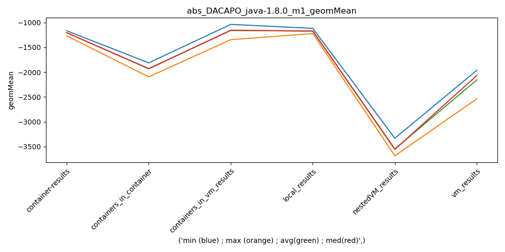
all runs of one jdk were made AVARAGE before processing
geom
DACAPO java-1.8.0 geom where all runs of one jdk were made AVARAGE before processing
MIN -1197.4 container-results
MIN -1814.0 containers_in_container
MIN -1131.6666666666667 containers_in_vm_results
MIN -1151.2 local_results
MIN -3477.75 nestedVM_results
MIN -2026.2 vm_results
MAX -1235.0 container-results
MAX -1975.0 containers_in_container
MAX -1223.2 containers_in_vm_results
MAX -1186.4 local_results
MAX -3596.0 nestedVM_results
MAX -2461.0 vm_results
AVG -1208.3600000000001 container-results
AVG -1920.4 containers_in_container
AVG -1159.4066666666668 containers_in_vm_results
AVG -1171.56 local_results
AVG -3549.15 nestedVM_results
AVG -2168.7200000000003 vm_results
MED -1205.6 container-results
MED -1951.5 containers_in_container
MED -1153.2 containers_in_vm_results
MED -1174.2 local_results
MED -3549.2 nestedVM_results
MED -2071.0 vm_results
geomMean of all keys (benchmark meassured relativre accuracy)
{'MIN': [1197.4, 1814.0, 1131.6666666666667, 1151.2, 3477.75, 2026.2], 'MAX': [1235.0, 1975.0, 1223.2, 1186.4, 3596.0, 2461.0], 'AVG': [1208.3600000000001, 1920.4, 1159.4066666666668, 1171.56, 3549.15, 2168.7200000000003], 'MED': [1205.6, 1951.5, 1153.2, 1174.2, 3549.2, 2071.0]}
DACAPO java-1.8.0 geomMean where all runs of one jdk were made AVARAGE before processing
MIN -1197.4 container-results
MIN -1814.0 containers_in_container
MIN -1131.6666666666667 containers_in_vm_results
MIN -1151.2 local_results
MIN -3477.75 nestedVM_results
MIN -2026.2 vm_results
MAX -1235.0 container-results
MAX -1975.0 containers_in_container
MAX -1223.2 containers_in_vm_results
MAX -1186.4 local_results
MAX -3596.0 nestedVM_results
MAX -2461.0 vm_results
AVG -1208.3600000000001 container-results
AVG -1920.4 containers_in_container
AVG -1159.4066666666668 containers_in_vm_results
AVG -1171.56 local_results
AVG -3549.15 nestedVM_results
AVG -2168.7200000000003 vm_results
MED -1205.6 container-results
MED -1951.5 containers_in_container
MED -1153.2 containers_in_vm_results
MED -1174.2 local_results
MED -3549.2 nestedVM_results
MED -2071.0 vm_results
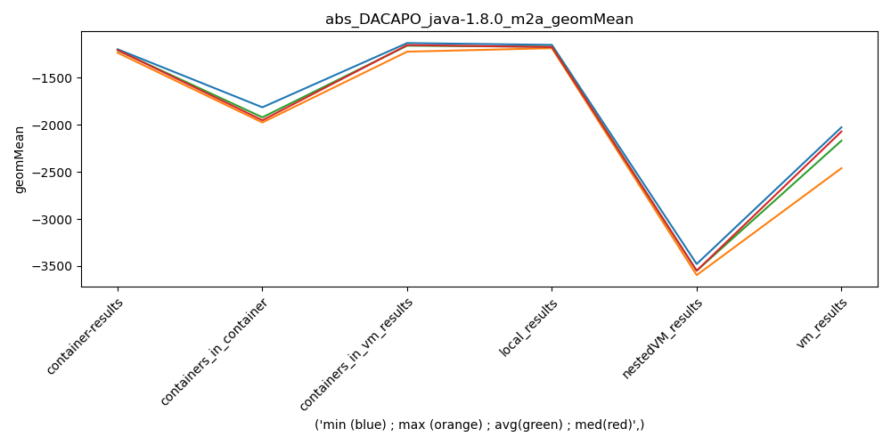
all runs of one jdk were made MEDIAN before processing
geom
DACAPO java-1.8.0 geom where all runs of one jdk were made MEDIAN before processing
MIN -1202.0 container-results
MIN -1814.0 containers_in_container
MIN -1144.0 containers_in_vm_results
MIN -1159.0 local_results
MIN -3488.0 nestedVM_results
MIN -2018.0 vm_results
MAX -1230.0 container-results
MAX -2096.0 containers_in_container
MAX -1189.0 containers_in_vm_results
MAX -1182.0 local_results
MAX -3615.0 nestedVM_results
MAX -2500.0 vm_results
AVG -1210.3 container-results
AVG -1938.0 containers_in_container
AVG -1155.3 containers_in_vm_results
AVG -1172.3 local_results
AVG -3555.7 nestedVM_results
AVG -2169.9 vm_results
MED -1209.0 container-results
MED -1971.0 containers_in_container
MED -1150.0 containers_in_vm_results
MED -1175.0 local_results
MED -3570.0 nestedVM_results
MED -2065.0 vm_results

geomMean of all keys (benchmark meassured relativre accuracy)
{'MIN': [1202.0, 1814.0, 1144.0, 1159.0, 3488.0, 2018.0], 'MAX': [1230.0, 2096.0, 1189.0, 1182.0, 3615.0, 2500.0], 'AVG': [1210.3, 1938.0, 1155.3, 1172.3, 3555.7, 2169.9], 'MED': [1209.0, 1971.0, 1150.0, 1175.0, 3570.0, 2065.0]}
DACAPO java-1.8.0 geomMean where all runs of one jdk were made MEDIAN before processing
MIN -1202.0 container-results
MIN -1814.0 containers_in_container
MIN -1144.0 containers_in_vm_results
MIN -1159.0 local_results
MIN -3488.0 nestedVM_results
MIN -2018.0 vm_results
MAX -1230.0 container-results
MAX -2096.0 containers_in_container
MAX -1189.0 containers_in_vm_results
MAX -1182.0 local_results
MAX -3615.0 nestedVM_results
MAX -2500.0 vm_results
AVG -1210.3 container-results
AVG -1938.0 containers_in_container
AVG -1155.3 containers_in_vm_results
AVG -1172.3 local_results
AVG -3555.7 nestedVM_results
AVG -2169.9 vm_results
MED -1209.0 container-results
MED -1971.0 containers_in_container
MED -1150.0 containers_in_vm_results
MED -1175.0 local_results
MED -3570.0 nestedVM_results
MED -2065.0 vm_results

geomMean of all metrics from geomMean of all keys
{'MIN': [1188.6979831396607, 1813.9999999999993, 1103.8753410962345, 1142.9347425981373, 3431.8366617728702, 2001.5219421855506], 'MAX': [1244.54679396356, 2054.8646398450596, 1251.264070730587, 1197.3193763395182, 3631.7991748923255, 2498.8122357758275], 'AVG': [1209.0564136362852, 1928.7240118628447, 1158.881889362768, 1171.8066147503303, 3550.7339044069718, 2164.5294194789917], 'MED': [1206.5320485470343, 1952.1081886078348, 1153.064060747987, 1174.733272790336, 3558.389470140678, 2067.3316680924877]}
DACAPO java-1.8.0 geomMean geomMean
MIN -1188.6979831396607 container-results
MIN -1813.9999999999993 containers_in_container
MIN -1103.8753410962345 containers_in_vm_results
MIN -1142.9347425981373 local_results
MIN -3431.8366617728702 nestedVM_results
MIN -2001.5219421855506 vm_results
MAX -1244.54679396356 container-results
MAX -2054.8646398450596 containers_in_container
MAX -1251.264070730587 containers_in_vm_results
MAX -1197.3193763395182 local_results
MAX -3631.7991748923255 nestedVM_results
MAX -2498.8122357758275 vm_results
AVG -1209.0564136362852 container-results
AVG -1928.7240118628447 containers_in_container
AVG -1158.881889362768 containers_in_vm_results
AVG -1171.8066147503303 local_results
AVG -3550.7339044069718 nestedVM_results
AVG -2164.5294194789917 vm_results
MED -1206.5320485470343 container-results
MED -1952.1081886078348 containers_in_container
MED -1153.064060747987 containers_in_vm_results
MED -1174.733272790336 local_results
MED -3558.389470140678 nestedVM_results
MED -2067.3316680924877 vm_results

java-11
all runs of one jdk are treated as INDIVIDUAL items
geom
DACAPO java-11 geom where all runs of one jdk are treated as INDIVIDUAL items
MIN -854.0 container-results
MIN -1865.0 containers_in_container
MIN -973.0 containers_in_vm_results
MIN -823.0 local_results
MIN -2502.0 nestedVM_results
MIN -1945.0 vm_results
MAX -1357.0 container-results
MAX -2099.0 containers_in_container
MAX -1386.0 containers_in_vm_results
MAX -1332.0 local_results
MAX -3945.0 nestedVM_results
MAX -2736.0 vm_results
AVG -1207.6666666666667 container-results
AVG -1943.8636363636363 containers_in_container
AVG -1173.8809523809523 containers_in_vm_results
AVG -1177.4807692307693 local_results
AVG -3651.5333333333333 nestedVM_results
AVG -2273.909090909091 vm_results
MED -1234.0 container-results
MED -1943.0 containers_in_container
MED -1182.0 containers_in_vm_results
MED -1208.0 local_results
MED -3668.0 nestedVM_results
MED -2184.0 vm_results

geomMean of all keys (benchmark meassured relativre accuracy)
{'MIN': [854.0, 1865.0, 973.0, 823.0, 2502.0, 1945.0], 'MAX': [1357.0, 2099.0, 1386.0, 1332.0, 3945.0, 2736.0], 'AVG': [1207.6666666666667, 1943.8636363636363, 1173.8809523809523, 1177.4807692307693, 3651.5333333333333, 2273.909090909091], 'MED': [1234.0, 1943.0, 1182.0, 1208.0, 3668.0, 2184.0]}
DACAPO java-11 geomMean where all runs of one jdk are treated as INDIVIDUAL items
MIN -854.0 container-results
MIN -1865.0 containers_in_container
MIN -973.0 containers_in_vm_results
MIN -823.0 local_results
MIN -2502.0 nestedVM_results
MIN -1945.0 vm_results
MAX -1357.0 container-results
MAX -2099.0 containers_in_container
MAX -1386.0 containers_in_vm_results
MAX -1332.0 local_results
MAX -3945.0 nestedVM_results
MAX -2736.0 vm_results
AVG -1207.6666666666667 container-results
AVG -1943.8636363636363 containers_in_container
AVG -1173.8809523809523 containers_in_vm_results
AVG -1177.4807692307693 local_results
AVG -3651.5333333333333 nestedVM_results
AVG -2273.909090909091 vm_results
MED -1234.0 container-results
MED -1943.0 containers_in_container
MED -1182.0 containers_in_vm_results
MED -1208.0 local_results
MED -3668.0 nestedVM_results
MED -2184.0 vm_results

all runs of one jdk were made AVARAGE before processing
geom
DACAPO java-11 geom where all runs of one jdk were made AVARAGE before processing
MIN -867.6 container-results
MIN -1875.0 containers_in_container
MIN -1003.6 containers_in_vm_results
MIN -854.4 local_results
MIN -3454.2 nestedVM_results
MIN -1991.8 vm_results
MAX -1252.6 container-results
MAX -2024.6666666666667 containers_in_container
MAX -1215.0 containers_in_vm_results
MAX -1240.4 local_results
MAX -3779.6666666666665 nestedVM_results
MAX -2605.4 vm_results
AVG -1208.2045454545455 container-results
AVG -1935.5757575757575 containers_in_container
AVG -1177.9348484848485 containers_in_vm_results
AVG -1180.6727272727273 local_results
AVG -3661.181818181818 nestedVM_results
AVG -2268.1983333333333 vm_results
MED -1240.2 container-results
MED -1932.0 containers_in_container
MED -1195.6666666666667 containers_in_vm_results
MED -1217.4 local_results
MED -3667.8 nestedVM_results
MED -2165.5 vm_results

geomMean of all keys (benchmark meassured relativre accuracy)
{'MIN': [867.6, 1875.0, 1003.6, 854.4, 3454.2, 1991.8], 'MAX': [1252.6, 2024.6666666666667, 1215.0, 1240.4, 3779.6666666666665, 2605.4], 'AVG': [1208.2045454545455, 1935.5757575757575, 1177.9348484848485, 1180.6727272727273, 3661.181818181818, 2268.1983333333333], 'MED': [1240.2, 1932.0, 1195.6666666666667, 1217.4, 3667.8, 2165.5]}
DACAPO java-11 geomMean where all runs of one jdk were made AVARAGE before processing
MIN -867.6 container-results
MIN -1875.0 containers_in_container
MIN -1003.6 containers_in_vm_results
MIN -854.4 local_results
MIN -3454.2 nestedVM_results
MIN -1991.8 vm_results
MAX -1252.6 container-results
MAX -2024.6666666666667 containers_in_container
MAX -1215.0 containers_in_vm_results
MAX -1240.4 local_results
MAX -3779.6666666666665 nestedVM_results
MAX -2605.4 vm_results
AVG -1208.2045454545455 container-results
AVG -1935.5757575757575 containers_in_container
AVG -1177.9348484848485 containers_in_vm_results
AVG -1180.6727272727273 local_results
AVG -3661.181818181818 nestedVM_results
AVG -2268.1983333333333 vm_results
MED -1240.2 container-results
MED -1932.0 containers_in_container
MED -1195.6666666666667 containers_in_vm_results
MED -1217.4 local_results
MED -3667.8 nestedVM_results
MED -2165.5 vm_results

all runs of one jdk were made MEDIAN before processing
geom
DACAPO java-11 geom where all runs of one jdk were made MEDIAN before processing
MIN -862.0 container-results
MIN -1875.0 containers_in_container
MIN -994.0 containers_in_vm_results
MIN -839.0 local_results
MIN -3591.0 nestedVM_results
MIN -1996.0 vm_results
MAX -1261.0 container-results
MAX -2009.0 containers_in_container
MAX -1247.0 containers_in_vm_results
MAX -1259.0 local_results
MAX -3792.0 nestedVM_results
MAX -2635.0 vm_results
AVG -1207.8181818181818 container-results
AVG -1948.2727272727273 containers_in_container
AVG -1180.909090909091 containers_in_vm_results
AVG -1180.7272727272727 local_results
AVG -3672.5454545454545 nestedVM_results
AVG -2271.5 vm_results
MED -1242.0 container-results
MED -1960.0 containers_in_container
MED -1201.0 containers_in_vm_results
MED -1218.0 local_results
MED -3664.0 nestedVM_results
MED -2184.0 vm_results
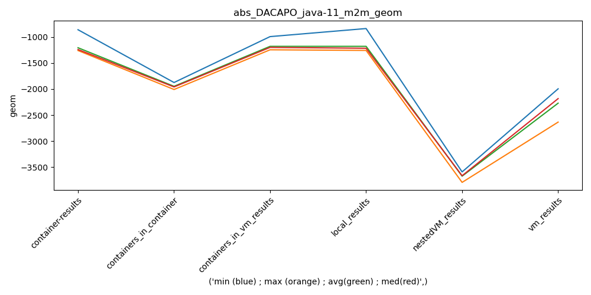
geomMean of all keys (benchmark meassured relativre accuracy)
{'MIN': [862.0, 1875.0, 994.0, 839.0, 3591.0, 1996.0], 'MAX': [1261.0, 2009.0, 1247.0, 1259.0, 3792.0, 2635.0], 'AVG': [1207.8181818181818, 1948.2727272727273, 1180.909090909091, 1180.7272727272727, 3672.5454545454545, 2271.5], 'MED': [1242.0, 1960.0, 1201.0, 1218.0, 3664.0, 2184.0]}
DACAPO java-11 geomMean where all runs of one jdk were made MEDIAN before processing
MIN -862.0 container-results
MIN -1875.0 containers_in_container
MIN -994.0 containers_in_vm_results
MIN -839.0 local_results
MIN -3591.0 nestedVM_results
MIN -1996.0 vm_results
MAX -1261.0 container-results
MAX -2009.0 containers_in_container
MAX -1247.0 containers_in_vm_results
MAX -1259.0 local_results
MAX -3792.0 nestedVM_results
MAX -2635.0 vm_results
AVG -1207.8181818181818 container-results
AVG -1948.2727272727273 containers_in_container
AVG -1180.909090909091 containers_in_vm_results
AVG -1180.7272727272727 local_results
AVG -3672.5454545454545 nestedVM_results
AVG -2271.5 vm_results
MED -1242.0 container-results
MED -1960.0 containers_in_container
MED -1201.0 containers_in_vm_results
MED -1218.0 local_results
MED -3664.0 nestedVM_results
MED -2184.0 vm_results

geomMean of all metrics from geomMean of all keys
{'MIN': [861.1818997568362, 1871.6607231197663, 990.1172473455006, 838.7019998487368, 3142.558686494084, 1977.4641716473973], 'MAX': [1289.3449211294367, 2043.8481961237792, 1280.5660602599328, 1276.5286629916654, 3838.1588558758867, 2658.2166492622346], 'AVG': [1207.89644341949, 1942.5635715588423, 1177.5714398402552, 1179.6259461232596, 3661.7434668133083, 2271.201268242902], 'MED': [1238.7285887802366, 1944.9659292256558, 1192.8619948299145, 1214.4580184959386, 3666.59953806506, 2177.8158389417517]}
DACAPO java-11 geomMean geomMean
MIN -861.1818997568362 container-results
MIN -1871.6607231197663 containers_in_container
MIN -990.1172473455006 containers_in_vm_results
MIN -838.7019998487368 local_results
MIN -3142.558686494084 nestedVM_results
MIN -1977.4641716473973 vm_results
MAX -1289.3449211294367 container-results
MAX -2043.8481961237792 containers_in_container
MAX -1280.5660602599328 containers_in_vm_results
MAX -1276.5286629916654 local_results
MAX -3838.1588558758867 nestedVM_results
MAX -2658.2166492622346 vm_results
AVG -1207.89644341949 container-results
AVG -1942.5635715588423 containers_in_container
AVG -1177.5714398402552 containers_in_vm_results
AVG -1179.6259461232596 local_results
AVG -3661.7434668133083 nestedVM_results
AVG -2271.201268242902 vm_results
MED -1238.7285887802366 container-results
MED -1944.9659292256558 containers_in_container
MED -1192.8619948299145 containers_in_vm_results
MED -1214.4580184959386 local_results
MED -3666.59953806506 nestedVM_results
MED -2177.8158389417517 vm_results

java-17
all runs of one jdk are treated as INDIVIDUAL items
geom
DACAPO java-17 geom where all runs of one jdk are treated as INDIVIDUAL items
MIN -1202.0 container-results
MIN -1881.0 containers_in_container
MIN -1009.0 containers_in_vm_results
MIN -1175.0 local_results
MIN -3436.0 nestedVM_results
MIN -2096.0 vm_results
MAX -1377.0 container-results
MAX -2142.0 containers_in_container
MAX -1244.0 containers_in_vm_results
MAX -1284.0 local_results
MAX -3828.0 nestedVM_results
MAX -2518.0 vm_results
AVG -1272.8222222222223 container-results
AVG -2011.1176470588234 containers_in_container
AVG -1053.918918918919 containers_in_vm_results
AVG -1231.15 local_results
AVG -3633.7619047619046 nestedVM_results
AVG -2199.2 vm_results
MED -1270.0 container-results
MED -1994.0 containers_in_container
MED -1036.0 containers_in_vm_results
MED -1232.0 local_results
MED -3642.0 nestedVM_results
MED -2181.0 vm_results

geomMean of all keys (benchmark meassured relativre accuracy)
{'MIN': [1202.0, 1881.0, 1009.0, 1175.0, 3436.0, 2096.0], 'MAX': [1377.0, 2142.0, 1244.0, 1284.0, 3828.0, 2518.0], 'AVG': [1272.8222222222223, 2011.1176470588234, 1053.918918918919, 1231.15, 3633.7619047619046, 2199.2], 'MED': [1270.0, 1994.0, 1036.0, 1232.0, 3642.0, 2181.0]}
DACAPO java-17 geomMean where all runs of one jdk are treated as INDIVIDUAL items
MIN -1202.0 container-results
MIN -1881.0 containers_in_container
MIN -1009.0 containers_in_vm_results
MIN -1175.0 local_results
MIN -3436.0 nestedVM_results
MIN -2096.0 vm_results
MAX -1377.0 container-results
MAX -2142.0 containers_in_container
MAX -1244.0 containers_in_vm_results
MAX -1284.0 local_results
MAX -3828.0 nestedVM_results
MAX -2518.0 vm_results
AVG -1272.8222222222223 container-results
AVG -2011.1176470588234 containers_in_container
AVG -1053.918918918919 containers_in_vm_results
AVG -1231.15 local_results
AVG -3633.7619047619046 nestedVM_results
AVG -2199.2 vm_results
MED -1270.0 container-results
MED -1994.0 containers_in_container
MED -1036.0 containers_in_vm_results
MED -1232.0 local_results
MED -3642.0 nestedVM_results
MED -2181.0 vm_results

all runs of one jdk were made AVARAGE before processing
geom
DACAPO java-17 geom where all runs of one jdk were made AVARAGE before processing
MIN -1251.6 container-results
MIN -1918.5 containers_in_container
MIN -1026.25 containers_in_vm_results
MIN -1214.8 local_results
MIN -3548.2 nestedVM_results
MIN -2131.4 vm_results
MAX -1313.6 container-results
MAX -2095.5 containers_in_container
MAX -1131.0 containers_in_vm_results
MAX -1243.4 local_results
MAX -3701.6 nestedVM_results
MAX -2277.0 vm_results
AVG -1272.822222222222 container-results
AVG -2008.1666666666667 containers_in_container
AVG -1059.4666666666667 containers_in_vm_results
AVG -1231.15 local_results
AVG -3634.233333333333 nestedVM_results
AVG -2199.2 vm_results
MED -1266.4 container-results
MED -2009.5 containers_in_container
MED -1055.25 containers_in_vm_results
MED -1235.6 local_results
MED -3634.8 nestedVM_results
MED -2159.2 vm_results
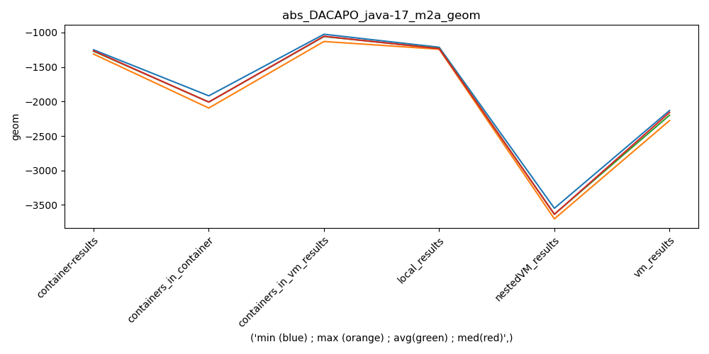
geomMean of all keys (benchmark meassured relativre accuracy)
{'MIN': [1251.6, 1918.5, 1026.25, 1214.8, 3548.2, 2131.4], 'MAX': [1313.6, 2095.5, 1131.0, 1243.4, 3701.6, 2277.0], 'AVG': [1272.822222222222, 2008.1666666666667, 1059.4666666666667, 1231.15, 3634.233333333333, 2199.2], 'MED': [1266.4, 2009.5, 1055.25, 1235.6, 3634.8, 2159.2]}
DACAPO java-17 geomMean where all runs of one jdk were made AVARAGE before processing
MIN -1251.6 container-results
MIN -1918.5 containers_in_container
MIN -1026.25 containers_in_vm_results
MIN -1214.8 local_results
MIN -3548.2 nestedVM_results
MIN -2131.4 vm_results
MAX -1313.6 container-results
MAX -2095.5 containers_in_container
MAX -1131.0 containers_in_vm_results
MAX -1243.4 local_results
MAX -3701.6 nestedVM_results
MAX -2277.0 vm_results
AVG -1272.822222222222 container-results
AVG -2008.1666666666667 containers_in_container
AVG -1059.4666666666667 containers_in_vm_results
AVG -1231.15 local_results
AVG -3634.233333333333 nestedVM_results
AVG -2199.2 vm_results
MED -1266.4 container-results
MED -2009.5 containers_in_container
MED -1055.25 containers_in_vm_results
MED -1235.6 local_results
MED -3634.8 nestedVM_results
MED -2159.2 vm_results

all runs of one jdk were made MEDIAN before processing
geom
DACAPO java-17 geom where all runs of one jdk were made MEDIAN before processing
MIN -1251.0 container-results
MIN -1955.0 containers_in_container
MIN -1023.0 containers_in_vm_results
MIN -1215.0 local_results
MIN -3532.0 nestedVM_results
MIN -2129.0 vm_results
MAX -1324.0 container-results
MAX -2142.0 containers_in_container
MAX -1244.0 containers_in_vm_results
MAX -1253.0 local_results
MAX -3742.0 nestedVM_results
MAX -2286.0 vm_results
AVG -1276.5555555555557 container-results
AVG -2031.3333333333333 containers_in_container
AVG -1064.7777777777778 containers_in_vm_results
AVG -1232.75 local_results
AVG -3649.777777777778 nestedVM_results
AVG -2194.0 vm_results
MED -1265.0 container-results
MED -2038.0 containers_in_container
MED -1036.0 containers_in_vm_results
MED -1234.0 local_results
MED -3658.0 nestedVM_results
MED -2167.0 vm_results

geomMean of all keys (benchmark meassured relativre accuracy)
{'MIN': [1251.0, 1955.0, 1023.0, 1215.0, 3532.0, 2129.0], 'MAX': [1324.0, 2142.0, 1244.0, 1253.0, 3742.0, 2286.0], 'AVG': [1276.5555555555557, 2031.3333333333333, 1064.7777777777778, 1232.75, 3649.777777777778, 2194.0], 'MED': [1265.0, 2038.0, 1036.0, 1234.0, 3658.0, 2167.0]}
DACAPO java-17 geomMean where all runs of one jdk were made MEDIAN before processing
MIN -1251.0 container-results
MIN -1955.0 containers_in_container
MIN -1023.0 containers_in_vm_results
MIN -1215.0 local_results
MIN -3532.0 nestedVM_results
MIN -2129.0 vm_results
MAX -1324.0 container-results
MAX -2142.0 containers_in_container
MAX -1244.0 containers_in_vm_results
MAX -1253.0 local_results
MAX -3742.0 nestedVM_results
MAX -2286.0 vm_results
AVG -1276.5555555555557 container-results
AVG -2031.3333333333333 containers_in_container
AVG -1064.7777777777778 containers_in_vm_results
AVG -1232.75 local_results
AVG -3649.777777777778 nestedVM_results
AVG -2194.0 vm_results
MED -1265.0 container-results
MED -2038.0 containers_in_container
MED -1036.0 containers_in_vm_results
MED -1234.0 local_results
MED -3658.0 nestedVM_results
MED -2167.0 vm_results

geomMean of all metrics from geomMean of all keys
{'MIN': [1234.6459722064353, 1917.9286805454678, 1019.3891106078671, 1201.4516806445977, 3505.048086649823, 2118.7382174768454], 'MAX': [1337.9144830622067, 2126.386465864002, 1205.1315469640856, 1260.0148181678821, 3756.831640426914, 2357.753115965795], 'AVG': [1274.0654519460652, 2016.8463276266039, 1059.3785101579208, 1231.6831024603657, 3639.250071471404, 2197.465298715892], 'MED': [1267.131584029594, 2013.751057031182, 1042.3773290436122, 1233.8657876723692, 3644.9204472016445, 2169.0479332325535]}
DACAPO java-17 geomMean geomMean
MIN -1234.6459722064353 container-results
MIN -1917.9286805454678 containers_in_container
MIN -1019.3891106078671 containers_in_vm_results
MIN -1201.4516806445977 local_results
MIN -3505.048086649823 nestedVM_results
MIN -2118.7382174768454 vm_results
MAX -1337.9144830622067 container-results
MAX -2126.386465864002 containers_in_container
MAX -1205.1315469640856 containers_in_vm_results
MAX -1260.0148181678821 local_results
MAX -3756.831640426914 nestedVM_results
MAX -2357.753115965795 vm_results
AVG -1274.0654519460652 container-results
AVG -2016.8463276266039 containers_in_container
AVG -1059.3785101579208 containers_in_vm_results
AVG -1231.6831024603657 local_results
AVG -3639.250071471404 nestedVM_results
AVG -2197.465298715892 vm_results
MED -1267.131584029594 container-results
MED -2013.751057031182 containers_in_container
MED -1042.3773290436122 containers_in_vm_results
MED -1233.8657876723692 local_results
MED -3644.9204472016445 nestedVM_results
MED -2169.0479332325535 vm_results

java-21
all runs of one jdk are treated as INDIVIDUAL items
geom
DACAPO java-21 geom where all runs of one jdk are treated as INDIVIDUAL items
MIN -863.0 container-results
MIN -1308.0 containers_in_container
MIN -821.0 containers_in_vm_results
MIN -846.0 local_results
MIN -2441.0 nestedVM_results
MIN -1680.0 vm_results
MAX -1054.0 container-results
MAX -1439.0 containers_in_container
MAX -1140.0 containers_in_vm_results
MAX -985.0 local_results
MAX -2743.0 nestedVM_results
MAX -1980.0 vm_results
AVG -921.9411764705883 container-results
AVG -1383.125 containers_in_container
AVG -906.939393939394 containers_in_vm_results
AVG -889.9142857142857 local_results
AVG -2608.885714285714 nestedVM_results
AVG -1756.71875 vm_results
MED -897.0 container-results
MED -1382.0 containers_in_container
MED -892.0 containers_in_vm_results
MED -883.0 local_results
MED -2608.0 nestedVM_results
MED -1731.0 vm_results
geomMean of all keys (benchmark meassured relativre accuracy)
{'MIN': [863.0, 1308.0, 821.0, 846.0, 2441.0, 1680.0], 'MAX': [1054.0, 1439.0, 1140.0, 985.0, 2743.0, 1980.0], 'AVG': [921.9411764705883, 1383.125, 906.939393939394, 889.9142857142857, 2608.885714285714, 1756.71875], 'MED': [897.0, 1382.0, 892.0, 883.0, 2608.0, 1731.0]}
DACAPO java-21 geomMean where all runs of one jdk are treated as INDIVIDUAL items
MIN -863.0 container-results
MIN -1308.0 containers_in_container
MIN -821.0 containers_in_vm_results
MIN -846.0 local_results
MIN -2441.0 nestedVM_results
MIN -1680.0 vm_results
MAX -1054.0 container-results
MAX -1439.0 containers_in_container
MAX -1140.0 containers_in_vm_results
MAX -985.0 local_results
MAX -2743.0 nestedVM_results
MAX -1980.0 vm_results
AVG -921.9411764705883 container-results
AVG -1383.125 containers_in_container
AVG -906.939393939394 containers_in_vm_results
AVG -889.9142857142857 local_results
AVG -2608.885714285714 nestedVM_results
AVG -1756.71875 vm_results
MED -897.0 container-results
MED -1382.0 containers_in_container
MED -892.0 containers_in_vm_results
MED -883.0 local_results
MED -2608.0 nestedVM_results
MED -1731.0 vm_results
all runs of one jdk were made AVARAGE before processing
geom
DACAPO java-21 geom where all runs of one jdk were made AVARAGE before processing
MIN -908.0 container-results
MIN -1341.0 containers_in_container
MIN -849.0 containers_in_vm_results
MIN -863.8 local_results
MIN -2582.8 nestedVM_results
MIN -1734.6 vm_results
MAX -948.75 container-results
MAX -1436.5 containers_in_container
MAX -953.0 containers_in_vm_results
MAX -910.8 local_results
MAX -2624.2 nestedVM_results
MAX -1781.3333333333333 vm_results
AVG -922.7071428571428 container-results
AVG -1380.4 containers_in_container
AVG -903.6285714285714 containers_in_vm_results
AVG -889.9142857142857 local_results
AVG -2608.8857142857146 nestedVM_results
AVG -1758.8119047619045 vm_results
MED -919.8 container-results
MED -1382.0 containers_in_container
MED -892.2 containers_in_vm_results
MED -890.0 local_results
MED -2613.6 nestedVM_results
MED -1759.8 vm_results
geomMean of all keys (benchmark meassured relativre accuracy)
{'MIN': [908.0, 1341.0, 849.0, 863.8, 2582.8, 1734.6], 'MAX': [948.75, 1436.5, 953.0, 910.8, 2624.2, 1781.3333333333333], 'AVG': [922.7071428571428, 1380.4, 903.6285714285714, 889.9142857142857, 2608.8857142857146, 1758.8119047619045], 'MED': [919.8, 1382.0, 892.2, 890.0, 2613.6, 1759.8]}
DACAPO java-21 geomMean where all runs of one jdk were made AVARAGE before processing
MIN -908.0 container-results
MIN -1341.0 containers_in_container
MIN -849.0 containers_in_vm_results
MIN -863.8 local_results
MIN -2582.8 nestedVM_results
MIN -1734.6 vm_results
MAX -948.75 container-results
MAX -1436.5 containers_in_container
MAX -953.0 containers_in_vm_results
MAX -910.8 local_results
MAX -2624.2 nestedVM_results
MAX -1781.3333333333333 vm_results
AVG -922.7071428571428 container-results
AVG -1380.4 containers_in_container
AVG -903.6285714285714 containers_in_vm_results
AVG -889.9142857142857 local_results
AVG -2608.8857142857146 nestedVM_results
AVG -1758.8119047619045 vm_results
MED -919.8 container-results
MED -1382.0 containers_in_container
MED -892.2 containers_in_vm_results
MED -890.0 local_results
MED -2613.6 nestedVM_results
MED -1759.8 vm_results
all runs of one jdk were made MEDIAN before processing
geom
DACAPO java-21 geom where all runs of one jdk were made MEDIAN before processing
MIN -879.0 container-results
MIN -1357.0 containers_in_container
MIN -838.0 containers_in_vm_results
MIN -857.0 local_results
MIN -2581.0 nestedVM_results
MIN -1695.0 vm_results
MAX -1011.0 container-results
MAX -1439.0 containers_in_container
MAX -965.0 containers_in_vm_results
MAX -908.0 local_results
MAX -2643.0 nestedVM_results
MAX -1758.0 vm_results
AVG -914.0 container-results
AVG -1393.8 containers_in_container
AVG -898.0 containers_in_vm_results
AVG -884.8571428571429 local_results
AVG -2613.1428571428573 nestedVM_results
AVG -1729.7142857142858 vm_results
MED -902.0 container-results
MED -1382.0 containers_in_container
MED -892.0 containers_in_vm_results
MED -884.0 local_results
MED -2618.0 nestedVM_results
MED -1731.0 vm_results
geomMean of all keys (benchmark meassured relativre accuracy)
{'MIN': [879.0, 1357.0, 838.0, 857.0, 2581.0, 1695.0], 'MAX': [1011.0, 1439.0, 965.0, 908.0, 2643.0, 1758.0], 'AVG': [914.0, 1393.8, 898.0, 884.8571428571429, 2613.1428571428573, 1729.7142857142858], 'MED': [902.0, 1382.0, 892.0, 884.0, 2618.0, 1731.0]}
DACAPO java-21 geomMean where all runs of one jdk were made MEDIAN before processing
MIN -879.0 container-results
MIN -1357.0 containers_in_container
MIN -838.0 containers_in_vm_results
MIN -857.0 local_results
MIN -2581.0 nestedVM_results
MIN -1695.0 vm_results
MAX -1011.0 container-results
MAX -1439.0 containers_in_container
MAX -965.0 containers_in_vm_results
MAX -908.0 local_results
MAX -2643.0 nestedVM_results
MAX -1758.0 vm_results
AVG -914.0 container-results
AVG -1393.8 containers_in_container
AVG -898.0 containers_in_vm_results
AVG -884.8571428571429 local_results
AVG -2613.1428571428573 nestedVM_results
AVG -1729.7142857142858 vm_results
MED -902.0 container-results
MED -1382.0 containers_in_container
MED -892.0 containers_in_vm_results
MED -884.0 local_results
MED -2618.0 nestedVM_results
MED -1731.0 vm_results
geomMean of all metrics from geomMean of all keys
{'MIN': [883.1378663576053, 1335.1768380818507, 835.9204603324354, 855.5685165258509, 2534.051988263656, 1703.044941896817], 'MAX': [1003.6474491065999, 1438.1661836121261, 1015.8783114740013, 933.9315214051952, 2669.5617270218268, 1837.143519906459], 'AVG': [919.5409973515827, 1385.7629550372114, 902.8484409277946, 888.2253681559993, 2610.303990743109, 1748.3645891222818], 'MED': [906.2140584512443, 1381.9999999999995, 892.0666616847259, 885.6612802628729, 2613.1967952636073, 1740.5472458229833]}
DACAPO java-21 geomMean geomMean
MIN -883.1378663576053 container-results
MIN -1335.1768380818507 containers_in_container
MIN -835.9204603324354 containers_in_vm_results
MIN -855.5685165258509 local_results
MIN -2534.051988263656 nestedVM_results
MIN -1703.044941896817 vm_results
MAX -1003.6474491065999 container-results
MAX -1438.1661836121261 containers_in_container
MAX -1015.8783114740013 containers_in_vm_results
MAX -933.9315214051952 local_results
MAX -2669.5617270218268 nestedVM_results
MAX -1837.143519906459 vm_results
AVG -919.5409973515827 container-results
AVG -1385.7629550372114 containers_in_container
AVG -902.8484409277946 containers_in_vm_results
AVG -888.2253681559993 local_results
AVG -2610.303990743109 nestedVM_results
AVG -1748.3645891222818 vm_results
MED -906.2140584512443 container-results
MED -1381.9999999999995 containers_in_container
MED -892.0666616847259 containers_in_vm_results
MED -885.6612802628729 local_results
MED -2613.1967952636073 nestedVM_results
MED -1740.5472458229833 vm_results
geomMean of all benchamrks from geomMean of all metrics and all keys
{'MIN': [256.771887704321, 387.12135621735484, 247.6408697338566, 250.44827423473512, 625.5526978897573, 427.5180717498072], 'MAX': [292.8720835529708, 418.53966793543395, 287.4255830598244, 282.4790562335468, 674.6853720993746, 491.80516119133983], 'AVG': [279.6712482424027, 401.7921215391523, 264.9344841730368, 272.85033009495623, 658.1756420992298, 452.1001264360264], 'MED': [279.8423936511591, 402.518588535521, 263.85977082159854, 274.51840787235534, 658.9848436631379, 442.6671097861432]}
DACAPO geomMean geomMean geomMean
MIN -256.771887704321 container-results
MIN -387.12135621735484 containers_in_container
MIN -247.6408697338566 containers_in_vm_results
MIN -250.44827423473512 local_results
MIN -625.5526978897573 nestedVM_results
MIN -427.5180717498072 vm_results
MAX -292.8720835529708 container-results
MAX -418.53966793543395 containers_in_container
MAX -287.4255830598244 containers_in_vm_results
MAX -282.4790562335468 local_results
MAX -674.6853720993746 nestedVM_results
MAX -491.80516119133983 vm_results
AVG -279.6712482424027 container-results
AVG -401.7921215391523 containers_in_container
AVG -264.9344841730368 containers_in_vm_results
AVG -272.85033009495623 local_results
AVG -658.1756420992298 nestedVM_results
AVG -452.1001264360264 vm_results
MED -279.8423936511591 container-results
MED -402.518588535521 containers_in_container
MED -263.85977082159854 containers_in_vm_results
MED -274.51840787235534 local_results
MED -658.9848436631379 nestedVM_results
MED -442.6671097861432 vm_results

RADARGUNs1
java-1.8.0
all runs of one jdk are treated as INDIVIDUAL items
BasicOperations.Put.ResponseTimeMean
RADARGUNs1 java-1.8.0 BasicOperations.Put.ResponseTimeMean where all runs of one jdk are treated as INDIVIDUAL items
MIN -4270.0 container-results
MIN -4385.0 containers_in_container
MIN -6812.0 containers_in_vm_results
MIN -4267.0 local_results
MIN -19262.0 nestedVM_results
MIN -7630.0 vm_results
MAX -3840.0 container-results
MAX -3835.0 containers_in_container
MAX -5816.0 containers_in_vm_results
MAX -3934.0 local_results
MAX -17522.0 nestedVM_results
MAX -5762.0 vm_results
AVG -4069.32 container-results
AVG -4064.98 containers_in_container
AVG -6377.32 containers_in_vm_results
AVG -4067.769230769231 local_results
AVG -18118.3 nestedVM_results
AVG -6893.26 vm_results
MED -4080.0 container-results
MED -4067.0 containers_in_container
MED -6480.0 containers_in_vm_results
MED -4057.0 local_results
MED -18128.0 nestedVM_results
MED -7217.0 vm_results

BasicOperations.Get.ResponseTimeMean
RADARGUNs1 java-1.8.0 BasicOperations.Get.ResponseTimeMean where all runs of one jdk are treated as INDIVIDUAL items
MIN -1227.0 container-results
MIN -1190.0 containers_in_container
MIN -1758.0 containers_in_vm_results
MIN -1325.0 local_results
MIN -6035.0 nestedVM_results
MIN -1801.0 vm_results
MAX -1044.0 container-results
MAX -1054.0 containers_in_container
MAX -1396.0 containers_in_vm_results
MAX -1071.0 local_results
MAX -5576.0 nestedVM_results
MAX -1379.0 vm_results
AVG -1123.86 container-results
AVG -1122.0 containers_in_container
AVG -1592.22 containers_in_vm_results
AVG -1152.6410256410256 local_results
AVG -5797.56 nestedVM_results
AVG -1563.42 vm_results
MED -1124.0 container-results
MED -1124.0 containers_in_container
MED -1580.0 containers_in_vm_results
MED -1140.0 local_results
MED -5794.0 nestedVM_results
MED -1533.0 vm_results

geomMean of all keys (benchmark meassured relativre accuracy)
{'MIN': [2288.9495407282357, 2284.327034380148, 3460.5629599820895, 2377.766809424339, 10781.7517129639, 3706.970461171764], 'MAX': [2002.2387470029641, 2010.4949639330111, 2849.4097634422465, 2052.6358663922833, 9884.466197018432, 2818.829189574991], 'AVG': [2138.538280040832, 2135.6281417887335, 3186.549301423093, 2165.335470135021, 10248.996602009389, 3282.843363488426], 'MED': [2141.476126413741, 2138.061739052453, 3199.749990233612, 2150.57666685008, 10248.591708132391, 3326.2082015412084]}
RADARGUNs1 java-1.8.0 geomMean where all runs of one jdk are treated as INDIVIDUAL items
MIN 2288.9495407282357 container-results
MIN 2284.327034380148 containers_in_container
MIN 3460.5629599820895 containers_in_vm_results
MIN 2377.766809424339 local_results
MIN 10781.7517129639 nestedVM_results
MIN 3706.970461171764 vm_results
MAX 2002.2387470029641 container-results
MAX 2010.4949639330111 containers_in_container
MAX 2849.4097634422465 containers_in_vm_results
MAX 2052.6358663922833 local_results
MAX 9884.466197018432 nestedVM_results
MAX 2818.829189574991 vm_results
AVG 2138.538280040832 container-results
AVG 2135.6281417887335 containers_in_container
AVG 3186.549301423093 containers_in_vm_results
AVG 2165.335470135021 local_results
AVG 10248.996602009389 nestedVM_results
AVG 3282.843363488426 vm_results
MED 2141.476126413741 container-results
MED 2138.061739052453 containers_in_container
MED 3199.749990233612 containers_in_vm_results
MED 2150.57666685008 local_results
MED 10248.591708132391 nestedVM_results
MED 3326.2082015412084 vm_results
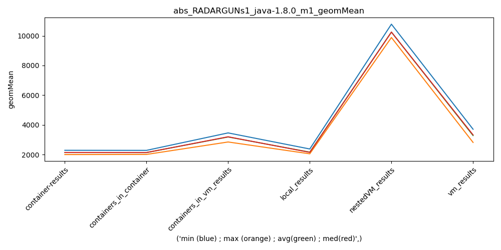
all runs of one jdk were made AVARAGE before processing
BasicOperations.Put.ResponseTimeMean
RADARGUNs1 java-1.8.0 BasicOperations.Put.ResponseTimeMean where all runs of one jdk were made AVARAGE before processing
MIN -4173.2 container-results
MIN -4156.0 containers_in_container
MIN -6605.8 containers_in_vm_results
MIN -4190.75 local_results
MIN -18480.4 nestedVM_results
MIN -7370.8 vm_results
MAX -3915.4 container-results
MAX -3982.4 containers_in_container
MAX -5986.0 containers_in_vm_results
MAX -4010.2 local_results
MAX -17740.6 nestedVM_results
MAX -5909.4 vm_results
AVG -4069.3199999999997 container-results
AVG -4064.9800000000005 containers_in_container
AVG -6377.32 containers_in_vm_results
AVG -4070.84375 local_results
AVG -18118.3 nestedVM_results
AVG -6893.26 vm_results
MED -4056.8 container-results
MED -4074.4 containers_in_container
MED -6535.2 containers_in_vm_results
MED -4082.0 local_results
MED -18168.4 nestedVM_results
MED -7301.2 vm_results

BasicOperations.Get.ResponseTimeMean
RADARGUNs1 java-1.8.0 BasicOperations.Get.ResponseTimeMean where all runs of one jdk were made AVARAGE before processing
MIN -1164.4 container-results
MIN -1153.8 containers_in_container
MIN -1669.4 containers_in_vm_results
MIN -1185.4 local_results
MIN -5872.2 nestedVM_results
MIN -1653.0 vm_results
MAX -1076.6 container-results
MAX -1090.4 containers_in_container
MAX -1480.0 containers_in_vm_results
MAX -1114.0 local_results
MAX -5697.2 nestedVM_results
MAX -1452.6 vm_results
AVG -1123.8600000000001 container-results
AVG -1122.0 containers_in_container
AVG -1592.22 containers_in_vm_results
AVG -1153.35 local_results
AVG -5797.5599999999995 nestedVM_results
AVG -1563.4199999999998 vm_results
MED -1127.6 container-results
MED -1120.8 containers_in_container
MED -1641.8 containers_in_vm_results
MED -1150.2 local_results
MED -5819.0 nestedVM_results
MED -1595.8 vm_results

geomMean of all keys (benchmark meassured relativre accuracy)
{'MIN': [2204.3761203569593, 2189.7928669168687, 3320.801487593018, 2228.8371519696097, 10417.322346937337, 3490.549011258831], 'MAX': [2053.124360578287, 2083.844754294331, 2976.4542664049113, 2113.6136827717596, 10053.444500269547, 2929.8454635014455], 'AVG': [2138.538280040832, 2135.628141788734, 3186.549301423093, 2166.8197061736587, 10248.996602009389, 3282.8433634884254], 'MED': [2138.7958481351134, 2136.957538183667, 3275.5902307828433, 2166.8217277847293, 10282.116494185426, 3413.393466918222]}
RADARGUNs1 java-1.8.0 geomMean where all runs of one jdk were made AVARAGE before processing
MIN 2204.3761203569593 container-results
MIN 2189.7928669168687 containers_in_container
MIN 3320.801487593018 containers_in_vm_results
MIN 2228.8371519696097 local_results
MIN 10417.322346937337 nestedVM_results
MIN 3490.549011258831 vm_results
MAX 2053.124360578287 container-results
MAX 2083.844754294331 containers_in_container
MAX 2976.4542664049113 containers_in_vm_results
MAX 2113.6136827717596 local_results
MAX 10053.444500269547 nestedVM_results
MAX 2929.8454635014455 vm_results
AVG 2138.538280040832 container-results
AVG 2135.628141788734 containers_in_container
AVG 3186.549301423093 containers_in_vm_results
AVG 2166.8197061736587 local_results
AVG 10248.996602009389 nestedVM_results
AVG 3282.8433634884254 vm_results
MED 2138.7958481351134 container-results
MED 2136.957538183667 containers_in_container
MED 3275.5902307828433 containers_in_vm_results
MED 2166.8217277847293 local_results
MED 10282.116494185426 nestedVM_results
MED 3413.393466918222 vm_results
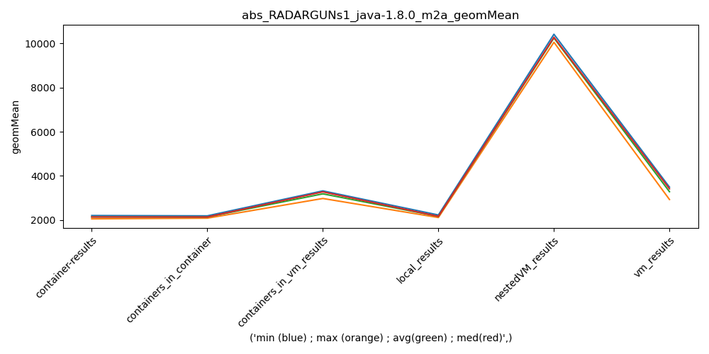
all runs of one jdk were made MEDIAN before processing
BasicOperations.Put.ResponseTimeMean
RADARGUNs1 java-1.8.0 BasicOperations.Put.ResponseTimeMean where all runs of one jdk were made MEDIAN before processing
MIN -4206.0 container-results
MIN -4136.0 containers_in_container
MIN -6596.0 containers_in_vm_results
MIN -4212.0 local_results
MIN -18323.0 nestedVM_results
MIN -7372.0 vm_results
MAX -3904.0 container-results
MAX -3996.0 containers_in_container
MAX -6007.0 containers_in_vm_results
MAX -3981.0 local_results
MAX -17760.0 nestedVM_results
MAX -5901.0 vm_results
AVG -4074.8 container-results
AVG -4054.4 containers_in_container
AVG -6367.4 containers_in_vm_results
AVG -4064.5 local_results
AVG -18086.2 nestedVM_results
AVG -6899.2 vm_results
MED -4080.0 container-results
MED -4053.0 containers_in_container
MED -6488.0 containers_in_vm_results
MED -4067.0 local_results
MED -18185.0 nestedVM_results
MED -7236.0 vm_results

BasicOperations.Get.ResponseTimeMean
RADARGUNs1 java-1.8.0 BasicOperations.Get.ResponseTimeMean where all runs of one jdk were made MEDIAN before processing
MIN -1149.0 container-results
MIN -1149.0 containers_in_container
MIN -1738.0 containers_in_vm_results
MIN -1185.0 local_results
MIN -5845.0 nestedVM_results
MIN -1682.0 vm_results
MAX -1064.0 container-results
MAX -1074.0 containers_in_container
MAX -1448.0 containers_in_vm_results
MAX -1121.0 local_results
MAX -5692.0 nestedVM_results
MAX -1426.0 vm_results
AVG -1115.2 container-results
AVG -1117.8 containers_in_container
AVG -1597.5 containers_in_vm_results
AVG -1141.25 local_results
AVG -5773.2 nestedVM_results
AVG -1547.0 vm_results
MED -1125.0 container-results
MED -1124.0 containers_in_container
MED -1598.0 containers_in_vm_results
MED -1142.0 local_results
MED -5798.0 nestedVM_results
MED -1531.0 vm_results

geomMean of all keys (benchmark meassured relativre accuracy)
{'MIN': [2198.33891836541, 2179.9688071162855, 3385.8304741968404, 2234.103847183474, 10348.813216982902, 3521.3213429052453], 'MAX': [2038.1010769831805, 2071.642826357864, 2949.260246231248, 2112.510591689424, 10054.348313043467, 2900.831949631002], 'AVG': [2131.7169042816167, 2128.851408623909, 3189.3449954496928, 2153.743398132656, 10218.37804350573, 3266.9653196812483], 'MED': [2142.428528562855, 2134.3785980935995, 3219.9105577639884, 2155.1134540900625, 10268.234025381385, 3328.4104314221827]}
RADARGUNs1 java-1.8.0 geomMean where all runs of one jdk were made MEDIAN before processing
MIN 2198.33891836541 container-results
MIN 2179.9688071162855 containers_in_container
MIN 3385.8304741968404 containers_in_vm_results
MIN 2234.103847183474 local_results
MIN 10348.813216982902 nestedVM_results
MIN 3521.3213429052453 vm_results
MAX 2038.1010769831805 container-results
MAX 2071.642826357864 containers_in_container
MAX 2949.260246231248 containers_in_vm_results
MAX 2112.510591689424 local_results
MAX 10054.348313043467 nestedVM_results
MAX 2900.831949631002 vm_results
AVG 2131.7169042816167 container-results
AVG 2128.851408623909 containers_in_container
AVG 3189.3449954496928 containers_in_vm_results
AVG 2153.743398132656 local_results
AVG 10218.37804350573 nestedVM_results
AVG 3266.9653196812483 vm_results
MED 2142.428528562855 container-results
MED 2134.3785980935995 containers_in_container
MED 3219.9105577639884 containers_in_vm_results
MED 2155.1134540900625 local_results
MED 10268.234025381385 nestedVM_results
MED 3328.4104314221827 vm_results
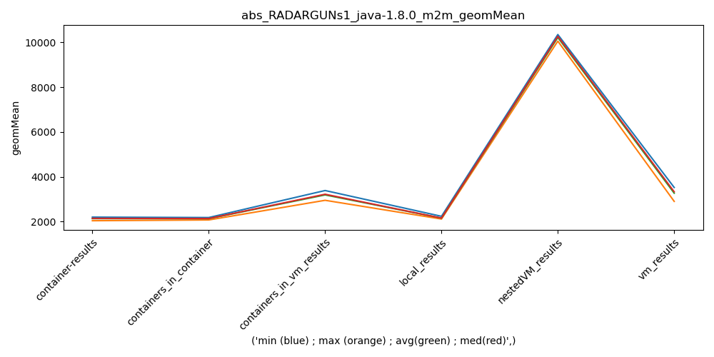
geomMean of all metrics from geomMean of all keys
{'MIN': [2230.174547735984, 2217.5352488797303, 3388.584290820271, 2279.2063791836886, 10514.258719788586, 3571.682464553169], 'MAX': [2031.0421919061835, 2055.0753199228734, 2924.5277030442207, 2092.724891714236, 9997.099407068341, 2882.7834137345535], 'AVG': [2136.2620662280005, 2133.3668372021043, 3187.48092703358, 2161.9582783331084, 10238.780235384771, 3277.5421262250175], 'MED': [2140.89961517086, 2136.465400920171, 3231.5916246716806, 2157.4931052243014, 10266.304861456529, 3355.759944205629]}
RADARGUNs1 java-1.8.0 geomMean geomMean
MIN 2230.174547735984 container-results
MIN 2217.5352488797303 containers_in_container
MIN 3388.584290820271 containers_in_vm_results
MIN 2279.2063791836886 local_results
MIN 10514.258719788586 nestedVM_results
MIN 3571.682464553169 vm_results
MAX 2031.0421919061835 container-results
MAX 2055.0753199228734 containers_in_container
MAX 2924.5277030442207 containers_in_vm_results
MAX 2092.724891714236 local_results
MAX 9997.099407068341 nestedVM_results
MAX 2882.7834137345535 vm_results
AVG 2136.2620662280005 container-results
AVG 2133.3668372021043 containers_in_container
AVG 3187.48092703358 containers_in_vm_results
AVG 2161.9582783331084 local_results
AVG 10238.780235384771 nestedVM_results
AVG 3277.5421262250175 vm_results
MED 2140.89961517086 container-results
MED 2136.465400920171 containers_in_container
MED 3231.5916246716806 containers_in_vm_results
MED 2157.4931052243014 local_results
MED 10266.304861456529 nestedVM_results
MED 3355.759944205629 vm_results
java-11
all runs of one jdk are treated as INDIVIDUAL items
BasicOperations.Put.ResponseTimeMean
RADARGUNs1 java-11 BasicOperations.Put.ResponseTimeMean where all runs of one jdk are treated as INDIVIDUAL items
MIN -4294.0 container-results
MIN -4244.0 containers_in_container
MIN -7065.0 containers_in_vm_results
MIN -4212.0 local_results
MIN -20742.0 nestedVM_results
MIN -7477.0 vm_results
MAX -3795.0 container-results
MAX -3837.0 containers_in_container
MAX -5447.0 containers_in_vm_results
MAX -3783.0 local_results
MAX -17541.0 nestedVM_results
MAX -5377.0 vm_results
AVG -4008.9636363636364 container-results
AVG -3995.019230769231 containers_in_container
AVG -6204.545454545455 containers_in_vm_results
AVG -3968.1454545454544 local_results
AVG -18093.272727272728 nestedVM_results
AVG -6375.454545454545 vm_results
MED -4003.0 container-results
MED -3998.0 containers_in_container
MED -6368.0 containers_in_vm_results
MED -3970.0 local_results
MED -18050.0 nestedVM_results
MED -6720.0 vm_results

BasicOperations.Get.ResponseTimeMean
RADARGUNs1 java-11 BasicOperations.Get.ResponseTimeMean where all runs of one jdk are treated as INDIVIDUAL items
MIN -1204.0 container-results
MIN -1194.0 containers_in_container
MIN -1733.0 containers_in_vm_results
MIN -1176.0 local_results
MIN -6014.0 nestedVM_results
MIN -1560.0 vm_results
MAX -1080.0 container-results
MAX -1068.0 containers_in_container
MAX -1344.0 containers_in_vm_results
MAX -1083.0 local_results
MAX -5654.0 nestedVM_results
MAX -1321.0 vm_results
AVG -1139.1090909090908 container-results
AVG -1118.6923076923076 containers_in_container
AVG -1544.9818181818182 containers_in_vm_results
AVG -1118.7272727272727 local_results
AVG -5826.272727272727 nestedVM_results
AVG -1440.7454545454545 vm_results
MED -1137.0 container-results
MED -1123.0 containers_in_container
MED -1596.0 containers_in_vm_results
MED -1115.0 local_results
MED -5816.0 nestedVM_results
MED -1447.0 vm_results

geomMean of all keys (benchmark meassured relativre accuracy)
{'MIN': [2273.758122580324, 2251.0744101428545, 3499.0920250830786, 2225.603738314617, 11168.81318672669, 3415.277441145887], 'MAX': [2024.4999382563587, 2024.3310006024212, 2705.6917784551883, 2024.1020231203763, 9958.75564515969, 2665.1485887282156], 'AVG': [2136.9714371759355, 2114.047606499054, 3096.112064728177, 2106.958125390431, 10267.246049356007, 3030.7436640245232], 'MED': [2133.4036186338485, 2118.903961957691, 3187.997490588724, 2103.936786122625, 10245.9162596617, 3118.307233099394]}
RADARGUNs1 java-11 geomMean where all runs of one jdk are treated as INDIVIDUAL items
MIN 2273.758122580324 container-results
MIN 2251.0744101428545 containers_in_container
MIN 3499.0920250830786 containers_in_vm_results
MIN 2225.603738314617 local_results
MIN 11168.81318672669 nestedVM_results
MIN 3415.277441145887 vm_results
MAX 2024.4999382563587 container-results
MAX 2024.3310006024212 containers_in_container
MAX 2705.6917784551883 containers_in_vm_results
MAX 2024.1020231203763 local_results
MAX 9958.75564515969 nestedVM_results
MAX 2665.1485887282156 vm_results
AVG 2136.9714371759355 container-results
AVG 2114.047606499054 containers_in_container
AVG 3096.112064728177 containers_in_vm_results
AVG 2106.958125390431 local_results
AVG 10267.246049356007 nestedVM_results
AVG 3030.7436640245232 vm_results
MED 2133.4036186338485 container-results
MED 2118.903961957691 containers_in_container
MED 3187.997490588724 containers_in_vm_results
MED 2103.936786122625 local_results
MED 10245.9162596617 nestedVM_results
MED 3118.307233099394 vm_results
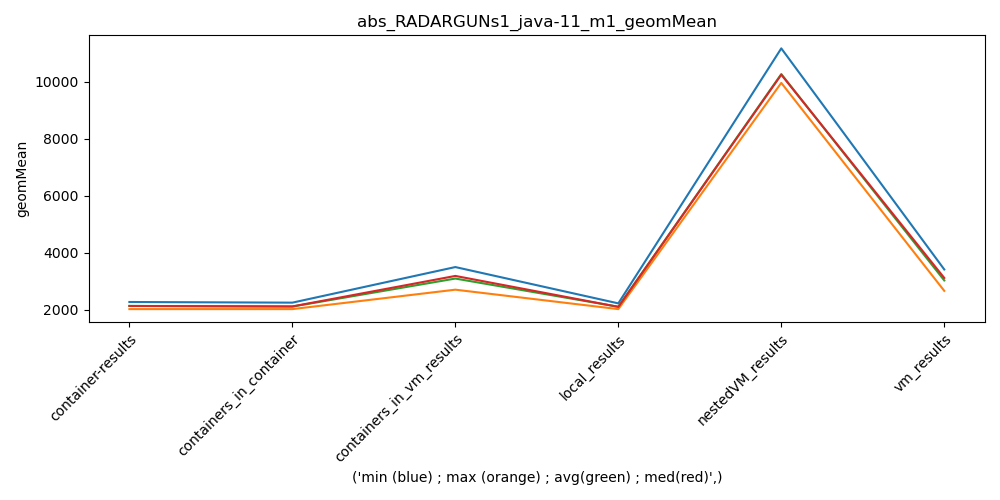
all runs of one jdk were made AVARAGE before processing
BasicOperations.Put.ResponseTimeMean
RADARGUNs1 java-11 BasicOperations.Put.ResponseTimeMean where all runs of one jdk were made AVARAGE before processing
MIN -4157.0 container-results
MIN -4110.4 containers_in_container
MIN -6658.6 containers_in_vm_results
MIN -4031.8 local_results
MIN -18882.0 nestedVM_results
MIN -6945.6 vm_results
MAX -3942.8 container-results
MAX -3919.6 containers_in_container
MAX -5601.6 containers_in_vm_results
MAX -3867.2 local_results
MAX -17817.4 nestedVM_results
MAX -5468.8 vm_results
AVG -4008.9636363636364 container-results
AVG -3991.390909090909 containers_in_container
AVG -6204.545454545455 containers_in_vm_results
AVG -3968.1454545454544 local_results
AVG -18093.272727272728 nestedVM_results
AVG -6375.454545454545 vm_results
MED -3999.8 container-results
MED -3977.6 containers_in_container
MED -6422.8 containers_in_vm_results
MED -3948.4 local_results
MED -17999.4 nestedVM_results
MED -6776.2 vm_results

BasicOperations.Get.ResponseTimeMean
RADARGUNs1 java-11 BasicOperations.Get.ResponseTimeMean where all runs of one jdk were made AVARAGE before processing
MIN -1162.4 container-results
MIN -1137.0 containers_in_container
MIN -1662.6 containers_in_vm_results
MIN -1130.6 local_results
MIN -5899.2 nestedVM_results
MIN -1505.8 vm_results
MAX -1108.2 container-results
MAX -1098.4 containers_in_container
MAX -1380.8 containers_in_vm_results
MAX -1095.6 local_results
MAX -5756.0 nestedVM_results
MAX -1363.0 vm_results
AVG -1139.109090909091 container-results
AVG -1118.8727272727274 containers_in_container
AVG -1544.9818181818182 containers_in_vm_results
AVG -1118.7272727272727 local_results
AVG -5826.272727272727 nestedVM_results
AVG -1440.7454545454545 vm_results
MED -1139.0 container-results
MED -1120.8 containers_in_container
MED -1605.8 containers_in_vm_results
MED -1121.0 local_results
MED -5823.4 nestedVM_results
MED -1470.0 vm_results
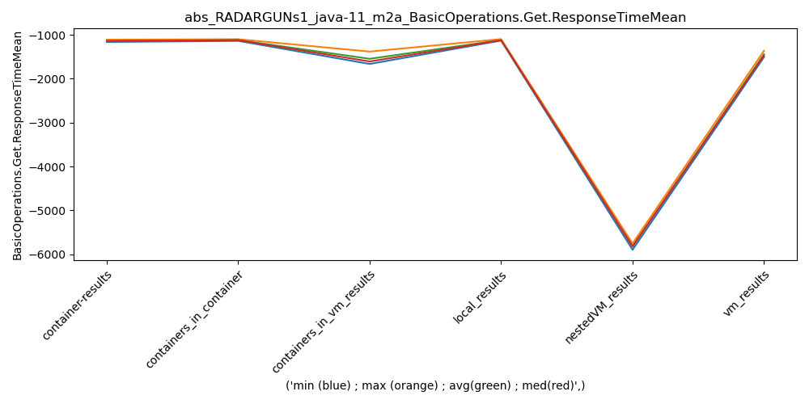
geomMean of all keys (benchmark meassured relativre accuracy)
{'MIN': [2198.2030843395705, 2161.8336661269755, 3327.2493684724022, 2135.0299951054553, 10554.084252079854, 3233.988942467182], 'MAX': [2090.313603266266, 2074.918947814589, 2781.130935428967, 2058.3741933866154, 10127.040752361965, 2730.1967694655273], 'AVG': [2136.971437175936, 2113.257777003581, 3096.112064728177, 2106.958125390431, 10267.246049356007, 3030.7436640245232], 'MED': [2134.4254964744027, 2111.4199203379703, 3211.499998443095, 2103.8432451111944, 10238.05186351388, 3156.1074126208064]}
RADARGUNs1 java-11 geomMean where all runs of one jdk were made AVARAGE before processing
MIN 2198.2030843395705 container-results
MIN 2161.8336661269755 containers_in_container
MIN 3327.2493684724022 containers_in_vm_results
MIN 2135.0299951054553 local_results
MIN 10554.084252079854 nestedVM_results
MIN 3233.988942467182 vm_results
MAX 2090.313603266266 container-results
MAX 2074.918947814589 containers_in_container
MAX 2781.130935428967 containers_in_vm_results
MAX 2058.3741933866154 local_results
MAX 10127.040752361965 nestedVM_results
MAX 2730.1967694655273 vm_results
AVG 2136.971437175936 container-results
AVG 2113.257777003581 containers_in_container
AVG 3096.112064728177 containers_in_vm_results
AVG 2106.958125390431 local_results
AVG 10267.246049356007 nestedVM_results
AVG 3030.7436640245232 vm_results
MED 2134.4254964744027 container-results
MED 2111.4199203379703 containers_in_container
MED 3211.499998443095 containers_in_vm_results
MED 2103.8432451111944 local_results
MED 10238.05186351388 nestedVM_results
MED 3156.1074126208064 vm_results
all runs of one jdk were made MEDIAN before processing
BasicOperations.Put.ResponseTimeMean
RADARGUNs1 java-11 BasicOperations.Put.ResponseTimeMean where all runs of one jdk were made MEDIAN before processing
MIN -4159.0 container-results
MIN -4100.0 containers_in_container
MIN -6675.0 containers_in_vm_results
MIN -4025.0 local_results
MIN -18593.0 nestedVM_results
MIN -7026.0 vm_results
MAX -3943.0 container-results
MAX -3905.0 containers_in_container
MAX -5599.0 containers_in_vm_results
MAX -3829.0 local_results
MAX -17839.0 nestedVM_results
MAX -5444.0 vm_results
AVG -4009.090909090909 container-results
AVG -3990.0 containers_in_container
AVG -6178.0 containers_in_vm_results
AVG -3950.3636363636365 local_results
AVG -18066.363636363636 nestedVM_results
AVG -6365.363636363636 vm_results
MED -3988.0 container-results
MED -3998.0 containers_in_container
MED -6414.0 containers_in_vm_results
MED -3972.0 local_results
MED -17996.0 nestedVM_results
MED -6745.0 vm_results
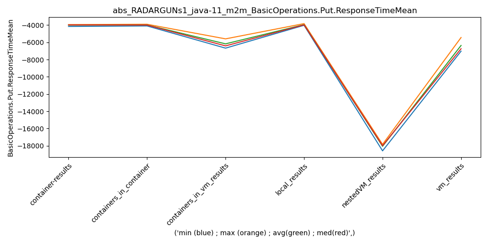
BasicOperations.Get.ResponseTimeMean
RADARGUNs1 java-11 BasicOperations.Get.ResponseTimeMean where all runs of one jdk were made MEDIAN before processing
MIN -1162.0 container-results
MIN -1141.0 containers_in_container
MIN -1655.0 containers_in_vm_results
MIN -1134.0 local_results
MIN -5927.0 nestedVM_results
MIN -1503.0 vm_results
MAX -1114.0 container-results
MAX -1092.0 containers_in_container
MAX -1374.0 containers_in_vm_results
MAX -1098.0 local_results
MAX -5750.0 nestedVM_results
MAX -1363.0 vm_results
AVG -1138.8181818181818 container-results
AVG -1122.3636363636363 containers_in_container
AVG -1543.0 containers_in_vm_results
AVG -1117.1818181818182 local_results
AVG -5832.272727272727 nestedVM_results
AVG -1439.4545454545455 vm_results
MED -1140.0 container-results
MED -1125.0 containers_in_container
MED -1608.0 containers_in_vm_results
MED -1120.0 local_results
MED -5827.0 nestedVM_results
MED -1462.0 vm_results

geomMean of all keys (benchmark meassured relativre accuracy)
{'MIN': [2198.3534747624185, 2162.8915830434034, 3323.7215587350274, 2136.4339446844597, 10497.65264237677, 3249.627363252593], 'MAX': [2095.829668651534, 2065.008474558882, 2773.6304728640403, 2050.4248340283043, 10127.89464795127, 2723.9992657855105], 'AVG': [2136.7324633268227, 2116.183099141213, 3087.4996356275087, 2100.7794814668355, 10264.889669029832, 3026.9872183137327], 'MED': [2132.2101209777616, 2120.789947165914, 3211.4968472660844, 2109.1799354251407, 10240.248629794103, 3140.2531745067945]}
RADARGUNs1 java-11 geomMean where all runs of one jdk were made MEDIAN before processing
MIN 2198.3534747624185 container-results
MIN 2162.8915830434034 containers_in_container
MIN 3323.7215587350274 containers_in_vm_results
MIN 2136.4339446844597 local_results
MIN 10497.65264237677 nestedVM_results
MIN 3249.627363252593 vm_results
MAX 2095.829668651534 container-results
MAX 2065.008474558882 containers_in_container
MAX 2773.6304728640403 containers_in_vm_results
MAX 2050.4248340283043 local_results
MAX 10127.89464795127 nestedVM_results
MAX 2723.9992657855105 vm_results
AVG 2136.7324633268227 container-results
AVG 2116.183099141213 containers_in_container
AVG 3087.4996356275087 containers_in_vm_results
AVG 2100.7794814668355 local_results
AVG 10264.889669029832 nestedVM_results
AVG 3026.9872183137327 vm_results
MED 2132.2101209777616 container-results
MED 2120.789947165914 containers_in_container
MED 3211.4968472660844 containers_in_vm_results
MED 2109.1799354251407 local_results
MED 10240.248629794103 nestedVM_results
MED 3140.2531745067945 vm_results
geomMean of all metrics from geomMean of all keys
{'MIN': [2223.155633671088, 2191.5377661504676, 3382.3752150938335, 2165.278502879422, 10735.936331717887, 3298.623087916408], 'MAX': [2069.9589498854457, 2054.6357177741515, 2753.274120804506, 2044.2477425585978, 10070.915136503656, 2706.2886775110555], 'AVG': [2136.891776256709, 2114.495799907125, 3093.238589004182, 2104.8965609249994, 10266.460529150707, 3029.490997773874], 'MED': [2133.3462199267874, 2117.034073046122, 3203.645592493942, 2105.65184607594, 10241.405048446863, 3138.184311109457]}
RADARGUNs1 java-11 geomMean geomMean
MIN 2223.155633671088 container-results
MIN 2191.5377661504676 containers_in_container
MIN 3382.3752150938335 containers_in_vm_results
MIN 2165.278502879422 local_results
MIN 10735.936331717887 nestedVM_results
MIN 3298.623087916408 vm_results
MAX 2069.9589498854457 container-results
MAX 2054.6357177741515 containers_in_container
MAX 2753.274120804506 containers_in_vm_results
MAX 2044.2477425585978 local_results
MAX 10070.915136503656 nestedVM_results
MAX 2706.2886775110555 vm_results
AVG 2136.891776256709 container-results
AVG 2114.495799907125 containers_in_container
AVG 3093.238589004182 containers_in_vm_results
AVG 2104.8965609249994 local_results
AVG 10266.460529150707 nestedVM_results
AVG 3029.490997773874 vm_results
MED 2133.3462199267874 container-results
MED 2117.034073046122 containers_in_container
MED 3203.645592493942 containers_in_vm_results
MED 2105.65184607594 local_results
MED 10241.405048446863 nestedVM_results
MED 3138.184311109457 vm_results

java-17
all runs of one jdk are treated as INDIVIDUAL items
BasicOperations.Put.ResponseTimeMean
RADARGUNs1 java-17 BasicOperations.Put.ResponseTimeMean where all runs of one jdk are treated as INDIVIDUAL items
MIN -4050.0 container-results
MIN -3987.0 containers_in_container
MIN -6738.0 containers_in_vm_results
MIN -4279.0 local_results
MIN -18964.0 nestedVM_results
MIN -7146.0 vm_results
MAX -3595.0 container-results
MAX -3555.0 containers_in_container
MAX -5166.0 containers_in_vm_results
MAX -3576.0 local_results
MAX -17083.0 nestedVM_results
MAX -4989.0 vm_results
AVG -3777.9777777777776 container-results
AVG -3779.5777777777776 containers_in_container
AVG -5844.977777777778 containers_in_vm_results
AVG -3755.9777777777776 local_results
AVG -17554.82222222222 nestedVM_results
AVG -6106.422222222222 vm_results
MED -3779.0 container-results
MED -3791.0 containers_in_container
MED -5925.0 containers_in_vm_results
MED -3755.0 local_results
MED -17529.0 nestedVM_results
MED -6597.0 vm_results
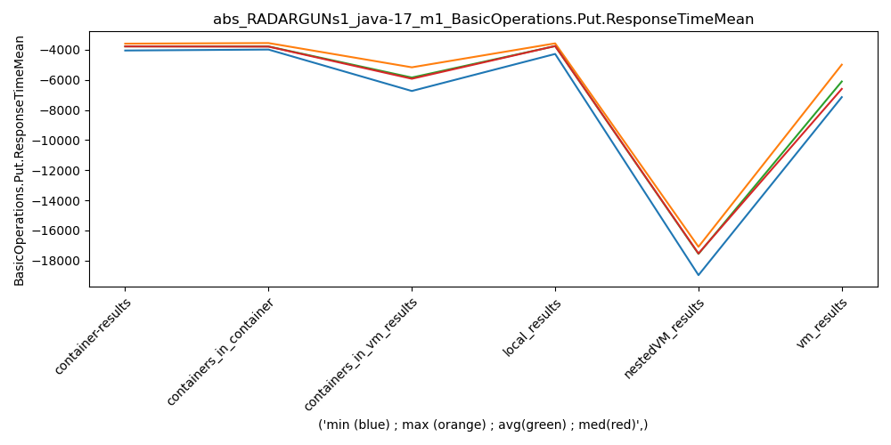
BasicOperations.Get.ResponseTimeMean
RADARGUNs1 java-17 BasicOperations.Get.ResponseTimeMean where all runs of one jdk are treated as INDIVIDUAL items
MIN -1160.0 container-results
MIN -1169.0 containers_in_container
MIN -1670.0 containers_in_vm_results
MIN -1178.0 local_results
MIN -5921.0 nestedVM_results
MIN -1544.0 vm_results
MAX -1003.0 container-results
MAX -996.0 containers_in_container
MAX -1251.0 containers_in_vm_results
MAX -1003.0 local_results
MAX -5513.0 nestedVM_results
MAX -1222.0 vm_results
AVG -1079.9555555555555 container-results
AVG -1073.9555555555555 containers_in_container
AVG -1460.4 containers_in_vm_results
AVG -1084.7111111111112 local_results
AVG -5738.111111111111 nestedVM_results
AVG -1394.2888888888888 vm_results
MED -1082.0 container-results
MED -1074.0 containers_in_container
MED -1515.0 containers_in_vm_results
MED -1084.0 local_results
MED -5741.0 nestedVM_results
MED -1423.0 vm_results

geomMean of all keys (benchmark meassured relativre accuracy)
{'MIN': [2167.4870241826134, 2158.8892977640144, 3354.468661353091, 2245.141866341635, 10596.501498136071, 3321.6598260508254], 'MAX': [1898.8904655087401, 1881.6960434671696, 2542.1774131637626, 1893.8658875432548, 9704.564853717038, 2469.120896189573], 'AVG': [2019.9128916556137, 2014.7204650022209, 2921.644322409329, 2018.4525827083419, 10036.50937562027, 2917.8959294856013], 'MED': [2022.097425941688, 2017.804252151333, 2996.059912618571, 2017.528190633281, 10031.649365881964, 3063.90779887385]}
RADARGUNs1 java-17 geomMean where all runs of one jdk are treated as INDIVIDUAL items
MIN 2167.4870241826134 container-results
MIN 2158.8892977640144 containers_in_container
MIN 3354.468661353091 containers_in_vm_results
MIN 2245.141866341635 local_results
MIN 10596.501498136071 nestedVM_results
MIN 3321.6598260508254 vm_results
MAX 1898.8904655087401 container-results
MAX 1881.6960434671696 containers_in_container
MAX 2542.1774131637626 containers_in_vm_results
MAX 1893.8658875432548 local_results
MAX 9704.564853717038 nestedVM_results
MAX 2469.120896189573 vm_results
AVG 2019.9128916556137 container-results
AVG 2014.7204650022209 containers_in_container
AVG 2921.644322409329 containers_in_vm_results
AVG 2018.4525827083419 local_results
AVG 10036.50937562027 nestedVM_results
AVG 2917.8959294856013 vm_results
MED 2022.097425941688 container-results
MED 2017.804252151333 containers_in_container
MED 2996.059912618571 containers_in_vm_results
MED 2017.528190633281 local_results
MED 10031.649365881964 nestedVM_results
MED 3063.90779887385 vm_results
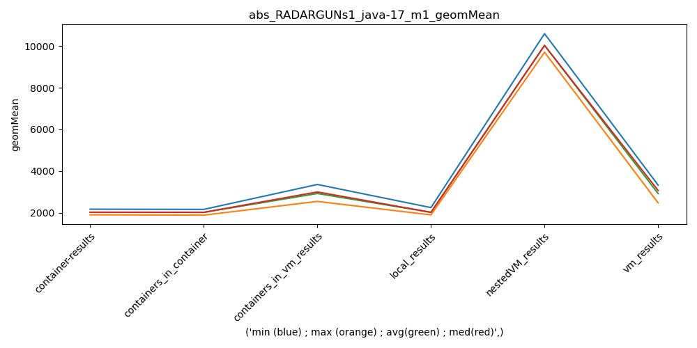
all runs of one jdk were made AVARAGE before processing
BasicOperations.Put.ResponseTimeMean
RADARGUNs1 java-17 BasicOperations.Put.ResponseTimeMean where all runs of one jdk were made AVARAGE before processing
MIN -3872.4 container-results
MIN -3825.2 containers_in_container
MIN -6521.2 containers_in_vm_results
MIN -3877.4 local_results
MIN -18065.6 nestedVM_results
MIN -6817.2 vm_results
MAX -3675.2 container-results
MAX -3637.6 containers_in_container
MAX -5224.8 containers_in_vm_results
MAX -3632.8 local_results
MAX -17191.6 nestedVM_results
MAX -5200.8 vm_results
AVG -3777.977777777778 container-results
AVG -3779.5777777777776 containers_in_container
AVG -5844.977777777778 containers_in_vm_results
AVG -3755.977777777778 local_results
AVG -17554.82222222222 nestedVM_results
AVG -6106.422222222222 vm_results
MED -3774.6 container-results
MED -3802.8 containers_in_container
MED -6070.0 containers_in_vm_results
MED -3748.2 local_results
MED -17622.0 nestedVM_results
MED -6681.0 vm_results
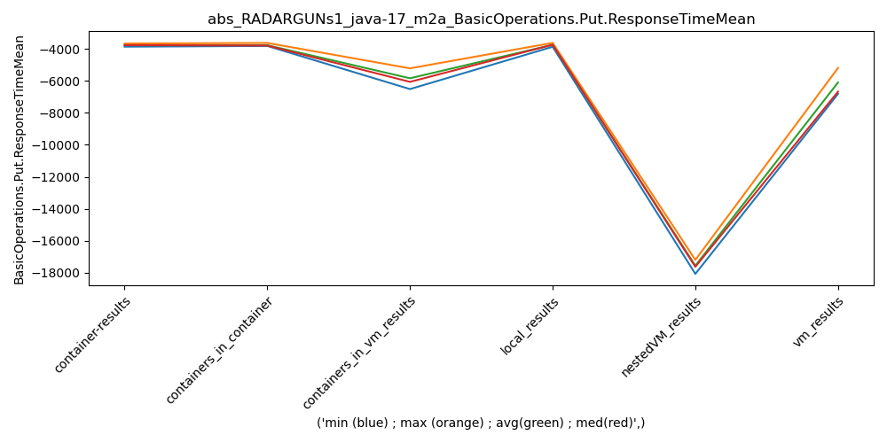
BasicOperations.Get.ResponseTimeMean
RADARGUNs1 java-17 BasicOperations.Get.ResponseTimeMean where all runs of one jdk were made AVARAGE before processing
MIN -1107.8 container-results
MIN -1106.0 containers_in_container
MIN -1609.6 containers_in_vm_results
MIN -1130.0 local_results
MIN -5843.6 nestedVM_results
MIN -1480.8 vm_results
MAX -1024.6 container-results
MAX -1015.8 containers_in_container
MAX -1266.6 containers_in_vm_results
MAX -1017.4 local_results
MAX -5579.4 nestedVM_results
MAX -1260.6 vm_results
AVG -1079.9555555555555 container-results
AVG -1073.9555555555555 containers_in_container
AVG -1460.4 containers_in_vm_results
AVG -1084.711111111111 local_results
AVG -5738.111111111111 nestedVM_results
AVG -1394.288888888889 vm_results
MED -1079.6 container-results
MED -1080.0 containers_in_container
MED -1531.2 containers_in_vm_results
MED -1096.0 local_results
MED -5778.8 nestedVM_results
MED -1450.4 vm_results
geomMean of all keys (benchmark meassured relativre accuracy)
{'MIN': [2071.1940324363622, 2056.8595479516825, 3239.8338722841945, 2093.194209814273, 10274.635767753522, 3177.2487721297493], 'MAX': [1940.5179514758422, 1922.2575477807336, 2572.4952244853635, 1922.5011625484133, 9793.815040115878, 2560.4937961260516], 'AVG': [2019.9128916556137, 2014.7204650022209, 2921.644322409329, 2018.4525827083419, 10036.50937562027, 2917.8959294856018], 'MED': [2018.677329342161, 2026.57938408541, 3048.6692178719554, 2026.8268796322984, 10091.284041191191, 3112.8961434651173]}
RADARGUNs1 java-17 geomMean where all runs of one jdk were made AVARAGE before processing
MIN 2071.1940324363622 container-results
MIN 2056.8595479516825 containers_in_container
MIN 3239.8338722841945 containers_in_vm_results
MIN 2093.194209814273 local_results
MIN 10274.635767753522 nestedVM_results
MIN 3177.2487721297493 vm_results
MAX 1940.5179514758422 container-results
MAX 1922.2575477807336 containers_in_container
MAX 2572.4952244853635 containers_in_vm_results
MAX 1922.5011625484133 local_results
MAX 9793.815040115878 nestedVM_results
MAX 2560.4937961260516 vm_results
AVG 2019.9128916556137 container-results
AVG 2014.7204650022209 containers_in_container
AVG 2921.644322409329 containers_in_vm_results
AVG 2018.4525827083419 local_results
AVG 10036.50937562027 nestedVM_results
AVG 2917.8959294856018 vm_results
MED 2018.677329342161 container-results
MED 2026.57938408541 containers_in_container
MED 3048.6692178719554 containers_in_vm_results
MED 2026.8268796322984 local_results
MED 10091.284041191191 nestedVM_results
MED 3112.8961434651173 vm_results
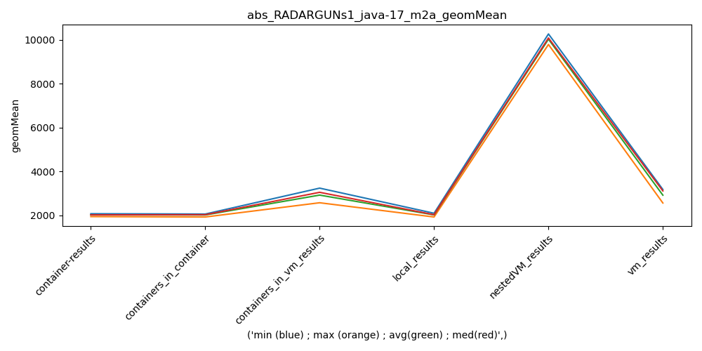
all runs of one jdk were made MEDIAN before processing
BasicOperations.Put.ResponseTimeMean
RADARGUNs1 java-17 BasicOperations.Put.ResponseTimeMean where all runs of one jdk were made MEDIAN before processing
MIN -3875.0 container-results
MIN -3820.0 containers_in_container
MIN -6506.0 containers_in_vm_results
MIN -3802.0 local_results
MIN -17965.0 nestedVM_results
MIN -6777.0 vm_results
MAX -3691.0 container-results
MAX -3655.0 containers_in_container
MAX -5218.0 containers_in_vm_results
MAX -3645.0 local_results
MAX -17193.0 nestedVM_results
MAX -5238.0 vm_results
AVG -3782.1111111111113 container-results
AVG -3775.0 containers_in_container
AVG -5821.222222222223 containers_in_vm_results
AVG -3753.4444444444443 local_results
AVG -17509.88888888889 nestedVM_results
AVG -6123.666666666667 vm_results
MED -3779.0 container-results
MED -3800.0 containers_in_container
MED -6025.0 containers_in_vm_results
MED -3759.0 local_results
MED -17580.0 nestedVM_results
MED -6708.0 vm_results
BasicOperations.Get.ResponseTimeMean
RADARGUNs1 java-17 BasicOperations.Get.ResponseTimeMean where all runs of one jdk were made MEDIAN before processing
MIN -1104.0 container-results
MIN -1095.0 containers_in_container
MIN -1597.0 containers_in_vm_results
MIN -1136.0 local_results
MIN -5878.0 nestedVM_results
MIN -1468.0 vm_results
MAX -1023.0 container-results
MAX -1016.0 containers_in_container
MAX -1269.0 containers_in_vm_results
MAX -1023.0 local_results
MAX -5587.0 nestedVM_results
MAX -1271.0 vm_results
AVG -1080.7777777777778 container-results
AVG -1070.4444444444443 containers_in_container
AVG -1454.6666666666667 containers_in_vm_results
AVG -1084.888888888889 local_results
AVG -5733.0 nestedVM_results
AVG -1391.7777777777778 vm_results
MED -1084.0 container-results
MED -1081.0 containers_in_container
MED -1526.0 containers_in_vm_results
MED -1086.0 local_results
MED -5764.0 nestedVM_results
MED -1437.0 vm_results

geomMean of all keys (benchmark meassured relativre accuracy)
{'MIN': [2068.332661831747, 2045.2139252410736, 3223.3650119091385, 2078.2377149883505, 10276.101887389012, 3154.1458431721258], 'MAX': [1943.1657160417378, 1927.0391796743522, 2573.255136981174, 1931.019160961382, 9800.882154173674, 2580.2127819232273], 'AVG': [2021.7867449301643, 2010.2059043236784, 2909.972152087701, 2017.9371082468122, 10019.191234825295, 2919.3806167036846], 'MED': [2023.9654147242734, 2026.7708306564905, 3032.1856803302794, 2020.4638081391115, 10066.33597690838, 3104.7376700777795]}
RADARGUNs1 java-17 geomMean where all runs of one jdk were made MEDIAN before processing
MIN 2068.332661831747 container-results
MIN 2045.2139252410736 containers_in_container
MIN 3223.3650119091385 containers_in_vm_results
MIN 2078.2377149883505 local_results
MIN 10276.101887389012 nestedVM_results
MIN 3154.1458431721258 vm_results
MAX 1943.1657160417378 container-results
MAX 1927.0391796743522 containers_in_container
MAX 2573.255136981174 containers_in_vm_results
MAX 1931.019160961382 local_results
MAX 9800.882154173674 nestedVM_results
MAX 2580.2127819232273 vm_results
AVG 2021.7867449301643 container-results
AVG 2010.2059043236784 containers_in_container
AVG 2909.972152087701 containers_in_vm_results
AVG 2017.9371082468122 local_results
AVG 10019.191234825295 nestedVM_results
AVG 2919.3806167036846 vm_results
MED 2023.9654147242734 container-results
MED 2026.7708306564905 containers_in_container
MED 3032.1856803302794 containers_in_vm_results
MED 2020.4638081391115 local_results
MED 10066.33597690838 nestedVM_results
MED 3104.7376700777795 vm_results
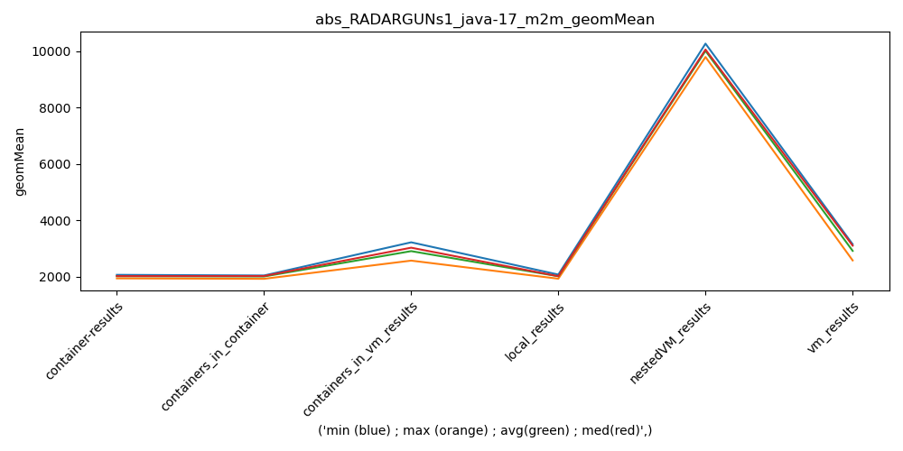
geomMean of all metrics from geomMean of all keys
{'MIN': [2101.8379415741583, 2086.3696211481724, 3272.040390504795, 2137.5494889361285, 10381.316861685847, 3216.8394170808206], 'MAX': [1927.4175362188514, 1910.2220933157912, 2562.6016049362443, 1915.7292869332696, 9766.322110151534, 2536.14376419876], 'AVG': [2020.537316362703, 2013.214486022265, 2917.7484062023527, 2018.2807432588233, 10030.73333853535, 2918.3907413108714], 'MED': [2021.5788705524058, 2023.7138293642163, 3025.5583334771063, 2021.6025691343089, 10063.060073321838, 3093.7727617300716]}
RADARGUNs1 java-17 geomMean geomMean
MIN 2101.8379415741583 container-results
MIN 2086.3696211481724 containers_in_container
MIN 3272.040390504795 containers_in_vm_results
MIN 2137.5494889361285 local_results
MIN 10381.316861685847 nestedVM_results
MIN 3216.8394170808206 vm_results
MAX 1927.4175362188514 container-results
MAX 1910.2220933157912 containers_in_container
MAX 2562.6016049362443 containers_in_vm_results
MAX 1915.7292869332696 local_results
MAX 9766.322110151534 nestedVM_results
MAX 2536.14376419876 vm_results
AVG 2020.537316362703 container-results
AVG 2013.214486022265 containers_in_container
AVG 2917.7484062023527 containers_in_vm_results
AVG 2018.2807432588233 local_results
AVG 10030.73333853535 nestedVM_results
AVG 2918.3907413108714 vm_results
MED 2021.5788705524058 container-results
MED 2023.7138293642163 containers_in_container
MED 3025.5583334771063 containers_in_vm_results
MED 2021.6025691343089 local_results
MED 10063.060073321838 nestedVM_results
MED 3093.7727617300716 vm_results
java-21
all runs of one jdk are treated as INDIVIDUAL items
BasicOperations.Put.ResponseTimeMean
RADARGUNs1 java-21 BasicOperations.Put.ResponseTimeMean where all runs of one jdk are treated as INDIVIDUAL items
MIN -4416.0 container-results
MIN -4065.0 containers_in_container
MIN -5588.0 containers_in_vm_results
MIN -4142.0 local_results
MIN -18294.0 nestedVM_results
MIN -5662.0 vm_results
MAX -3775.0 container-results
MAX -3773.0 containers_in_container
MAX -5267.0 containers_in_vm_results
MAX -3715.0 local_results
MAX -16944.0 nestedVM_results
MAX -5250.0 vm_results
AVG -3910.1714285714284 container-results
AVG -3904.6 containers_in_container
AVG -5415.285714285715 containers_in_vm_results
AVG -3876.2 local_results
AVG -17487.885714285716 nestedVM_results
AVG -5418.742857142857 vm_results
MED -3884.0 container-results
MED -3884.0 containers_in_container
MED -5399.0 containers_in_vm_results
MED -3861.0 local_results
MED -17494.0 nestedVM_results
MED -5419.0 vm_results
BasicOperations.Get.ResponseTimeMean
RADARGUNs1 java-21 BasicOperations.Get.ResponseTimeMean where all runs of one jdk are treated as INDIVIDUAL items
MIN -1371.0 container-results
MIN -1131.0 containers_in_container
MIN -1413.0 containers_in_vm_results
MIN -1134.0 local_results
MIN -5788.0 nestedVM_results
MIN -1423.0 vm_results
MAX -1058.0 container-results
MAX -1043.0 containers_in_container
MAX -1275.0 containers_in_vm_results
MAX -1038.0 local_results
MAX -5512.0 nestedVM_results
MAX -1268.0 vm_results
AVG -1108.4857142857143 container-results
AVG -1084.4857142857143 containers_in_container
AVG -1325.7142857142858 containers_in_vm_results
AVG -1084.2571428571428 local_results
AVG -5685.314285714286 nestedVM_results
AVG -1319.7428571428572 vm_results
MED -1098.0 container-results
MED -1086.0 containers_in_container
MED -1317.0 containers_in_vm_results
MED -1082.0 local_results
MED -5682.0 nestedVM_results
MED -1310.0 vm_results
geomMean of all keys (benchmark meassured relativre accuracy)
{'MIN': [2460.556034720608, 2144.1816620799646, 2809.9544480293625, 2167.2627897880775, 10290.076384556141, 2838.490091580381], 'MAX': [1998.4869276530183, 1983.7436830397216, 2591.4137068403415, 1963.7133191991136, 9664.125826995425, 2580.116276449571], 'AVG': [2081.9147842742245, 2057.78592666973, 2679.388294490566, 2050.072568750398, 9971.164750337211, 2674.200288012879], 'MED': [2065.0985448641427, 2053.782851228435, 2666.5488932325993, 2043.9182958230008, 9970.000401203602, 2664.3742229649347]}
RADARGUNs1 java-21 geomMean where all runs of one jdk are treated as INDIVIDUAL items
MIN 2460.556034720608 container-results
MIN 2144.1816620799646 containers_in_container
MIN 2809.9544480293625 containers_in_vm_results
MIN 2167.2627897880775 local_results
MIN 10290.076384556141 nestedVM_results
MIN 2838.490091580381 vm_results
MAX 1998.4869276530183 container-results
MAX 1983.7436830397216 containers_in_container
MAX 2591.4137068403415 containers_in_vm_results
MAX 1963.7133191991136 local_results
MAX 9664.125826995425 nestedVM_results
MAX 2580.116276449571 vm_results
AVG 2081.9147842742245 container-results
AVG 2057.78592666973 containers_in_container
AVG 2679.388294490566 containers_in_vm_results
AVG 2050.072568750398 local_results
AVG 9971.164750337211 nestedVM_results
AVG 2674.200288012879 vm_results
MED 2065.0985448641427 container-results
MED 2053.782851228435 containers_in_container
MED 2666.5488932325993 containers_in_vm_results
MED 2043.9182958230008 local_results
MED 9970.000401203602 nestedVM_results
MED 2664.3742229649347 vm_results
all runs of one jdk were made AVARAGE before processing
BasicOperations.Put.ResponseTimeMean
RADARGUNs1 java-21 BasicOperations.Put.ResponseTimeMean where all runs of one jdk were made AVARAGE before processing
MIN -4145.0 container-results
MIN -4043.8 containers_in_container
MIN -5517.4 containers_in_vm_results
MIN -4048.0 local_results
MIN -17646.2 nestedVM_results
MIN -5580.4 vm_results
MAX -3838.2 container-results
MAX -3817.8 containers_in_container
MAX -5362.0 containers_in_vm_results
MAX -3783.4 local_results
MAX -17311.6 nestedVM_results
MAX -5344.4 vm_results
AVG -3910.171428571429 container-results
AVG -3904.6 containers_in_container
AVG -5415.285714285715 containers_in_vm_results
AVG -3876.2000000000003 local_results
AVG -17487.885714285712 nestedVM_results
AVG -5418.742857142856 vm_results
MED -3879.6 container-results
MED -3884.2 containers_in_container
MED -5413.8 containers_in_vm_results
MED -3829.2 local_results
MED -17462.6 nestedVM_results
MED -5401.6 vm_results
BasicOperations.Get.ResponseTimeMean
RADARGUNs1 java-21 BasicOperations.Get.ResponseTimeMean where all runs of one jdk were made AVARAGE before processing
MIN -1169.2 container-results
MIN -1105.8 containers_in_container
MIN -1344.6 containers_in_vm_results
MIN -1121.2 local_results
MIN -5758.0 nestedVM_results
MIN -1351.2 vm_results
MAX -1088.2 container-results
MAX -1060.8 containers_in_container
MAX -1296.4 containers_in_vm_results
MAX -1052.0 local_results
MAX -5616.6 nestedVM_results
MAX -1301.4 vm_results
AVG -1108.4857142857143 container-results
AVG -1084.4857142857143 containers_in_container
AVG -1325.7142857142858 containers_in_vm_results
AVG -1084.257142857143 local_results
AVG -5685.314285714286 nestedVM_results
AVG -1319.7428571428572 vm_results
MED -1104.2 container-results
MED -1085.6 containers_in_container
MED -1332.2 containers_in_vm_results
MED -1088.6 local_results
MED -5685.6 nestedVM_results
MED -1316.0 vm_results
geomMean of all keys (benchmark meassured relativre accuracy)
{'MIN': [2201.4390747872176, 2114.623853076476, 2723.728334470969, 2130.4031543348788, 10080.020813470575, 2745.9491036798186], 'MAX': [2043.7047829860358, 2012.4418600297502, 2636.531205959831, 1995.0280198533553, 9860.645646203904, 2637.2717266144573], 'AVG': [2081.9147842742245, 2057.78592666973, 2679.388294490566, 2050.0725687503987, 9971.164750337211, 2674.2002880128784], 'MED': [2069.7474048781896, 2053.4574551229443, 2685.5659291851316, 2041.6824238847726, 9964.203859817402, 2666.17808857548]}
RADARGUNs1 java-21 geomMean where all runs of one jdk were made AVARAGE before processing
MIN 2201.4390747872176 container-results
MIN 2114.623853076476 containers_in_container
MIN 2723.728334470969 containers_in_vm_results
MIN 2130.4031543348788 local_results
MIN 10080.020813470575 nestedVM_results
MIN 2745.9491036798186 vm_results
MAX 2043.7047829860358 container-results
MAX 2012.4418600297502 containers_in_container
MAX 2636.531205959831 containers_in_vm_results
MAX 1995.0280198533553 local_results
MAX 9860.645646203904 nestedVM_results
MAX 2637.2717266144573 vm_results
AVG 2081.9147842742245 container-results
AVG 2057.78592666973 containers_in_container
AVG 2679.388294490566 containers_in_vm_results
AVG 2050.0725687503987 local_results
AVG 9971.164750337211 nestedVM_results
AVG 2674.2002880128784 vm_results
MED 2069.7474048781896 container-results
MED 2053.4574551229443 containers_in_container
MED 2685.5659291851316 containers_in_vm_results
MED 2041.6824238847726 local_results
MED 9964.203859817402 nestedVM_results
MED 2666.17808857548 vm_results
all runs of one jdk were made MEDIAN before processing
BasicOperations.Put.ResponseTimeMean
RADARGUNs1 java-21 BasicOperations.Put.ResponseTimeMean where all runs of one jdk were made MEDIAN before processing
MIN -4123.0 container-results
MIN -4055.0 containers_in_container
MIN -5491.0 containers_in_vm_results
MIN -4051.0 local_results
MIN -17664.0 nestedVM_results
MIN -5614.0 vm_results
MAX -3841.0 container-results
MAX -3819.0 containers_in_container
MAX -5349.0 containers_in_vm_results
MAX -3791.0 local_results
MAX -17330.0 nestedVM_results
MAX -5359.0 vm_results
AVG -3907.4285714285716 container-results
AVG -3904.1428571428573 containers_in_container
AVG -5389.142857142857 containers_in_vm_results
AVG -3883.4285714285716 local_results
AVG -17447.14285714286 nestedVM_results
AVG -5421.142857142857 vm_results
MED -3877.0 container-results
MED -3890.0 containers_in_container
MED -5369.0 containers_in_vm_results
MED -3838.0 local_results
MED -17367.0 nestedVM_results
MED -5382.0 vm_results
BasicOperations.Get.ResponseTimeMean
RADARGUNs1 java-21 BasicOperations.Get.ResponseTimeMean where all runs of one jdk were made MEDIAN before processing
MIN -1132.0 container-results
MIN -1108.0 containers_in_container
MIN -1341.0 containers_in_vm_results
MIN -1122.0 local_results
MIN -5756.0 nestedVM_results
MIN -1341.0 vm_results
MAX -1092.0 container-results
MAX -1060.0 containers_in_container
MAX -1299.0 containers_in_vm_results
MAX -1048.0 local_results
MAX -5612.0 nestedVM_results
MAX -1302.0 vm_results
AVG -1103.5714285714287 container-results
AVG -1085.857142857143 containers_in_container
AVG -1319.0 containers_in_vm_results
AVG -1083.857142857143 local_results
AVG -5692.571428571428 nestedVM_results
AVG -1314.2857142857142 vm_results
MED -1104.0 container-results
MED -1089.0 containers_in_container
MED -1317.0 containers_in_vm_results
MED -1084.0 local_results
MED -5682.0 nestedVM_results
MED -1310.0 vm_results

geomMean of all keys (benchmark meassured relativre accuracy)
{'MIN': [2160.37867051126, 2119.6556324082458, 2713.564261262298, 2131.952626115318, 10083.351823674506, 2743.788257136472], 'MAX': [2048.0166014952124, 2011.9990059639692, 2635.9724960628855, 1993.2305436150632, 9861.843641023721, 2641.4802668201023], 'AVG': [2076.5660429209192, 2058.9661017518633, 2666.135673324114, 2051.6046880231015, 9965.897196879743, 2669.256565458798], 'MED': [2068.866356244405, 2058.2055290956732, 2659.130120923006, 2039.703900079617, 9933.745215174386, 2655.262698868042]}
RADARGUNs1 java-21 geomMean where all runs of one jdk were made MEDIAN before processing
MIN 2160.37867051126 container-results
MIN 2119.6556324082458 containers_in_container
MIN 2713.564261262298 containers_in_vm_results
MIN 2131.952626115318 local_results
MIN 10083.351823674506 nestedVM_results
MIN 2743.788257136472 vm_results
MAX 2048.0166014952124 container-results
MAX 2011.9990059639692 containers_in_container
MAX 2635.9724960628855 containers_in_vm_results
MAX 1993.2305436150632 local_results
MAX 9861.843641023721 nestedVM_results
MAX 2641.4802668201023 vm_results
AVG 2076.5660429209192 container-results
AVG 2058.9661017518633 containers_in_container
AVG 2666.135673324114 containers_in_vm_results
AVG 2051.6046880231015 local_results
AVG 9965.897196879743 nestedVM_results
AVG 2669.256565458798 vm_results
MED 2068.866356244405 container-results
MED 2058.2055290956732 containers_in_container
MED 2659.130120923006 containers_in_vm_results
MED 2039.703900079617 local_results
MED 9933.745215174386 nestedVM_results
MED 2655.262698868042 vm_results
geomMean of all metrics from geomMean of all keys
{'MIN': [2270.3349620545932, 2126.1146070254404, 2748.7446244852777, 2143.1388398042204, 10150.67639677408, 2775.7274458490406], 'MAX': [2029.9452063952365, 2002.6830417178337, 2621.2202476900725, 1983.9385044708824, 9795.095625491984, 2619.4724951901585], 'AVG': [2080.130341451974, 2058.179243182127, 2674.9634507691057, 2050.583148002151, 9969.408589901048, 2672.551363969771], 'MED': [2067.903118740097, 2055.147471331018, 2670.391804060767, 2041.7674808168745, 9955.970451048519, 2661.934046377371]}
RADARGUNs1 java-21 geomMean geomMean
MIN 2270.3349620545932 container-results
MIN 2126.1146070254404 containers_in_container
MIN 2748.7446244852777 containers_in_vm_results
MIN 2143.1388398042204 local_results
MIN 10150.67639677408 nestedVM_results
MIN 2775.7274458490406 vm_results
MAX 2029.9452063952365 container-results
MAX 2002.6830417178337 containers_in_container
MAX 2621.2202476900725 containers_in_vm_results
MAX 1983.9385044708824 local_results
MAX 9795.095625491984 nestedVM_results
MAX 2619.4724951901585 vm_results
AVG 2080.130341451974 container-results
AVG 2058.179243182127 containers_in_container
AVG 2674.9634507691057 containers_in_vm_results
AVG 2050.583148002151 local_results
AVG 9969.408589901048 nestedVM_results
AVG 2672.551363969771 vm_results
MED 2067.903118740097 container-results
MED 2055.147471331018 containers_in_container
MED 2670.391804060767 containers_in_vm_results
MED 2041.7674808168745 local_results
MED 9955.970451048519 nestedVM_results
MED 2661.934046377371 vm_results
geomMean of all benchamrks from geomMean of all metrics and all keys
{'MIN': [472.93295461803575, 464.2153345769994, 634.802495121731, 468.6544879282053, 1640.8663289028168, 637.3857466479132], 'MAX': [439.7725926334301, 438.17917392502756, 557.9791359467627, 438.75451879826585, 1573.0282935894759, 553.2415243296707], 'AVG': [453.52256075984945, 451.1584765280651, 598.7497449635673, 451.8428408253388, 1600.7894329293297, 599.5114604809269], 'MED': [453.080848265588, 451.7343966077448, 608.8191316416402, 451.4478707894034, 1601.4650779980534, 613.2407512891914]}
RADARGUNs1 geomMean geomMean geomMean
MIN 472.93295461803575 container-results
MIN 464.2153345769994 containers_in_container
MIN 634.802495121731 containers_in_vm_results
MIN 468.6544879282053 local_results
MIN 1640.8663289028168 nestedVM_results
MIN 637.3857466479132 vm_results
MAX 439.7725926334301 container-results
MAX 438.17917392502756 containers_in_container
MAX 557.9791359467627 containers_in_vm_results
MAX 438.75451879826585 local_results
MAX 1573.0282935894759 nestedVM_results
MAX 553.2415243296707 vm_results
AVG 453.52256075984945 container-results
AVG 451.1584765280651 containers_in_container
AVG 598.7497449635673 containers_in_vm_results
AVG 451.8428408253388 local_results
AVG 1600.7894329293297 nestedVM_results
AVG 599.5114604809269 vm_results
MED 453.080848265588 container-results
MED 451.7343966077448 containers_in_container
MED 608.8191316416402 containers_in_vm_results
MED 451.4478707894034 local_results
MED 1601.4650779980534 nestedVM_results
MED 613.2407512891914 vm_results
RADARGUNs3
java-1.8.0
all runs of one jdk are treated as INDIVIDUAL items
BasicOperations.Put.ResponseTimeMean
RADARGUNs3 java-1.8.0 BasicOperations.Put.ResponseTimeMean where all runs of one jdk are treated as INDIVIDUAL items
MIN -253298.0 container-results
MIN -265558.0 containers_in_container
MIN -664337.0 containers_in_vm_results
MIN -248478.0 local_results
MIN -1246926.0 nestedVM_results
MIN -561771.0 vm_results
MAX -244154.0 container-results
MAX -257407.0 containers_in_container
MAX -571803.0 containers_in_vm_results
MAX -240993.0 local_results
MAX -1094660.0 nestedVM_results
MAX -440380.0 vm_results
AVG -249286.1 container-results
AVG -262221.4680851064 containers_in_container
AVG -630328.3541666666 containers_in_vm_results
AVG -245572.8 local_results
AVG -1190163.08 nestedVM_results
AVG -489257.06 vm_results
MED -249654.0 container-results
MED -262672.0 containers_in_container
MED -642803.0 containers_in_vm_results
MED -245619.0 local_results
MED -1191146.0 nestedVM_results
MED -475340.0 vm_results

BasicOperations.Get.ResponseTimeMean
RADARGUNs3 java-1.8.0 BasicOperations.Get.ResponseTimeMean where all runs of one jdk are treated as INDIVIDUAL items
MIN -62915.0 container-results
MIN -66641.0 containers_in_container
MIN -165278.0 containers_in_vm_results
MIN -61631.0 local_results
MIN -308057.0 nestedVM_results
MIN -139677.0 vm_results
MAX -60078.0 container-results
MAX -63517.0 containers_in_container
MAX -142575.0 containers_in_vm_results
MAX -58937.0 local_results
MAX -270129.0 nestedVM_results
MAX -115600.0 vm_results
AVG -61668.26 container-results
AVG -65146.10638297872 containers_in_container
AVG -156792.9375 containers_in_vm_results
AVG -60645.825 local_results
AVG -293831.36 nestedVM_results
AVG -125254.12 vm_results
MED -61986.0 container-results
MED -65175.0 containers_in_container
MED -160019.0 containers_in_vm_results
MED -60786.0 local_results
MED -293766.0 nestedVM_results
MED -122828.0 vm_results

geomMean of all keys (benchmark meassured relativre accuracy)
{'MIN': [126238.8358232125, 133030.26226389242, 331361.2691398921, 123749.53582943251, 619777.6075190196, 280118.7033509187], 'MAX': [121112.69137460367, 127866.02527254846, 285525.5027576346, 119178.0367391576, 543782.5035250767, 225627.85289055074], 'AVG': [123988.06405935211, 130700.83265141505, 314374.03556803486, 122036.736491763, 591360.4961596512, 247550.92911174297], 'MED': [124398.76544403486, 130842.07121564531, 320719.0254054162, 122189.18337561635, 591538.8371324405, 241630.009560071]}
RADARGUNs3 java-1.8.0 geomMean where all runs of one jdk are treated as INDIVIDUAL items
MIN 126238.8358232125 container-results
MIN 133030.26226389242 containers_in_container
MIN 331361.2691398921 containers_in_vm_results
MIN 123749.53582943251 local_results
MIN 619777.6075190196 nestedVM_results
MIN 280118.7033509187 vm_results
MAX 121112.69137460367 container-results
MAX 127866.02527254846 containers_in_container
MAX 285525.5027576346 containers_in_vm_results
MAX 119178.0367391576 local_results
MAX 543782.5035250767 nestedVM_results
MAX 225627.85289055074 vm_results
AVG 123988.06405935211 container-results
AVG 130700.83265141505 containers_in_container
AVG 314374.03556803486 containers_in_vm_results
AVG 122036.736491763 local_results
AVG 591360.4961596512 nestedVM_results
AVG 247550.92911174297 vm_results
MED 124398.76544403486 container-results
MED 130842.07121564531 containers_in_container
MED 320719.0254054162 containers_in_vm_results
MED 122189.18337561635 local_results
MED 591538.8371324405 nestedVM_results
MED 241630.009560071 vm_results
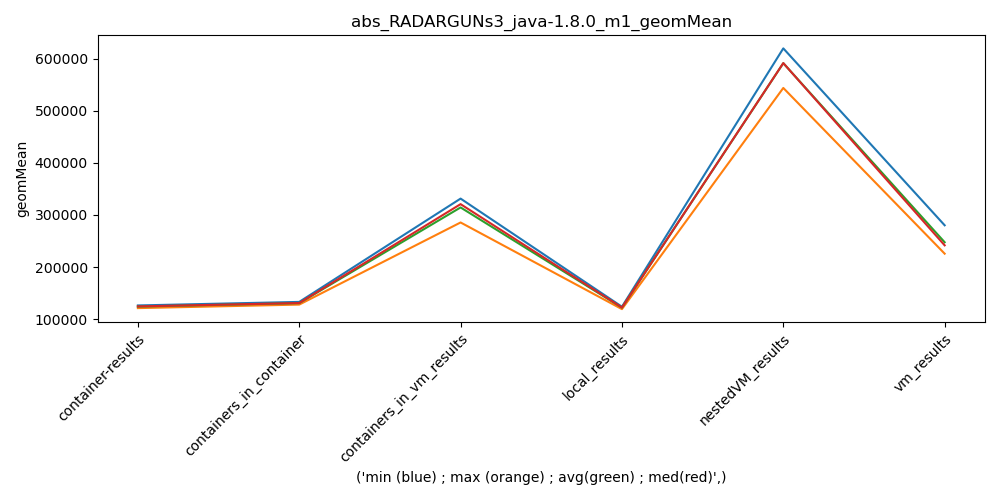
all runs of one jdk were made AVARAGE before processing
BasicOperations.Put.ResponseTimeMean
RADARGUNs3 java-1.8.0 BasicOperations.Put.ResponseTimeMean where all runs of one jdk were made AVARAGE before processing
MIN -252380.2 container-results
MIN -264344.8 containers_in_container
MIN -658495.6 containers_in_vm_results
MIN -247132.2 local_results
MIN -1219378.6 nestedVM_results
MIN -548198.8 vm_results
MAX -245363.4 container-results
MAX -258425.2 containers_in_container
MAX -585849.2 containers_in_vm_results
MAX -242063.6 local_results
MAX -1160671.4 nestedVM_results
MAX -456948.8 vm_results
AVG -249286.1 container-results
AVG -262266.9583333334 containers_in_container
AVG -631237.8733333333 containers_in_vm_results
AVG -245572.8 local_results
AVG -1190163.08 nestedVM_results
AVG -489257.05999999994 vm_results
MED -249787.6 container-results
MED -263462.8 containers_in_container
MED -646406.8 containers_in_vm_results
MED -246039.6 local_results
MED -1195530.0 nestedVM_results
MED -469376.4 vm_results

BasicOperations.Get.ResponseTimeMean
RADARGUNs3 java-1.8.0 BasicOperations.Get.ResponseTimeMean where all runs of one jdk were made AVARAGE before processing
MIN -62418.6 container-results
MIN -65918.0 containers_in_container
MIN -164000.4 containers_in_vm_results
MIN -61281.4 local_results
MIN -300732.0 nestedVM_results
MIN -136172.8 vm_results
MAX -60484.8 container-results
MAX -64131.2 containers_in_container
MAX -144825.2 containers_in_vm_results
MAX -59568.8 local_results
MAX -286249.8 nestedVM_results
MAX -118789.2 vm_results
AVG -61668.259999999995 container-results
AVG -65154.193333333336 containers_in_container
AVG -157044.3 containers_in_vm_results
AVG -60645.825 local_results
AVG -293831.36 nestedVM_results
AVG -125254.12 vm_results
MED -61990.8 container-results
MED -65326.6 containers_in_container
MED -160806.6 containers_in_vm_results
MED -60784.0 local_results
MED -295580.2 nestedVM_results
MED -122156.8 vm_results

geomMean of all keys (benchmark meassured relativre accuracy)
{'MIN': [125511.82713879996, 132004.09283957825, 328623.70851513435, 123063.4275529493, 605562.6847281791, 273221.0928033193], 'MAX': [121822.64229739888, 128736.62332933857, 291282.8995321215, 120080.9650847294, 576404.3338800637, 232981.93576532922], 'AVG': [123988.0640593521, 130720.28193128748, 314852.83856291015, 122036.736491763, 591360.4961596512, 247550.92911174297], 'MED': [124436.86412827994, 131191.19235101112, 322407.3195894907, 122291.74561841857, 594453.5276251626, 239452.54022356914]}
RADARGUNs3 java-1.8.0 geomMean where all runs of one jdk were made AVARAGE before processing
MIN 125511.82713879996 container-results
MIN 132004.09283957825 containers_in_container
MIN 328623.70851513435 containers_in_vm_results
MIN 123063.4275529493 local_results
MIN 605562.6847281791 nestedVM_results
MIN 273221.0928033193 vm_results
MAX 121822.64229739888 container-results
MAX 128736.62332933857 containers_in_container
MAX 291282.8995321215 containers_in_vm_results
MAX 120080.9650847294 local_results
MAX 576404.3338800637 nestedVM_results
MAX 232981.93576532922 vm_results
AVG 123988.0640593521 container-results
AVG 130720.28193128748 containers_in_container
AVG 314852.83856291015 containers_in_vm_results
AVG 122036.736491763 local_results
AVG 591360.4961596512 nestedVM_results
AVG 247550.92911174297 vm_results
MED 124436.86412827994 container-results
MED 131191.19235101112 containers_in_container
MED 322407.3195894907 containers_in_vm_results
MED 122291.74561841857 local_results
MED 594453.5276251626 nestedVM_results
MED 239452.54022356914 vm_results
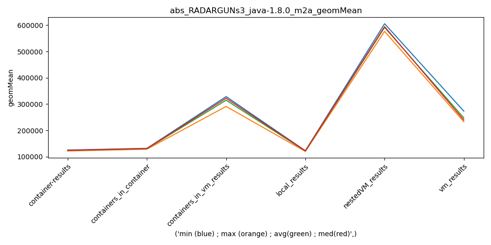
all runs of one jdk were made MEDIAN before processing
BasicOperations.Put.ResponseTimeMean
RADARGUNs3 java-1.8.0 BasicOperations.Put.ResponseTimeMean where all runs of one jdk were made MEDIAN before processing
MIN -252944.0 container-results
MIN -264642.0 containers_in_container
MIN -659325.0 containers_in_vm_results
MIN -246998.0 local_results
MIN -1239762.0 nestedVM_results
MIN -548893.0 vm_results
MAX -244938.0 container-results
MAX -258832.0 containers_in_container
MAX -581048.0 containers_in_vm_results
MAX -241563.0 local_results
MAX -1157325.0 nestedVM_results
MAX -446167.0 vm_results
AVG -249092.3 container-results
AVG -262420.4 containers_in_container
AVG -629210.0 containers_in_vm_results
AVG -245357.625 local_results
AVG -1193591.4 nestedVM_results
AVG -486156.4 vm_results
MED -249654.0 container-results
MED -263588.0 containers_in_container
MED -644391.0 containers_in_vm_results
MED -245608.0 local_results
MED -1199044.0 nestedVM_results
MED -467849.0 vm_results

BasicOperations.Get.ResponseTimeMean
RADARGUNs3 java-1.8.0 BasicOperations.Get.ResponseTimeMean where all runs of one jdk were made MEDIAN before processing
MIN -62334.0 container-results
MIN -66213.0 containers_in_container
MIN -164728.0 containers_in_vm_results
MIN -61336.0 local_results
MIN -303992.0 nestedVM_results
MIN -136156.0 vm_results
MAX -60613.0 container-results
MAX -64223.0 containers_in_container
MAX -144283.0 containers_in_vm_results
MAX -59702.0 local_results
MAX -286258.0 nestedVM_results
MAX -116443.0 vm_results
AVG -61675.9 container-results
AVG -65199.0 containers_in_container
AVG -156833.1 containers_in_vm_results
AVG -60724.75 local_results
AVG -294359.8 nestedVM_results
AVG -124468.4 vm_results
MED -62029.0 container-results
MED -65218.0 containers_in_container
MED -160519.0 containers_in_vm_results
MED -60901.0 local_results
MED -295023.0 nestedVM_results
MED -122221.0 vm_results
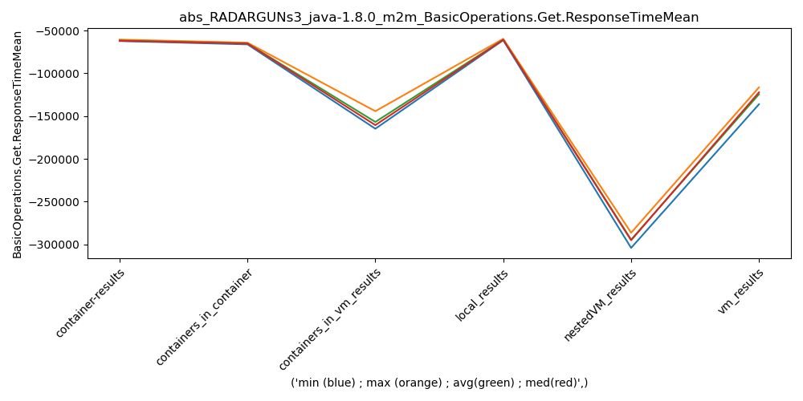
geomMean of all keys (benchmark meassured relativre accuracy)
{'MIN': [125566.76031498145, 132373.48958911674, 329559.2338260301, 123084.80543105229, 613903.6812921063, 273377.1667641612], 'MAX': [121845.91496640336, 128930.08778403899, 289543.3449140215, 120090.7749412918, 575581.0454227971, 227932.06001131126], 'AVG': [123947.53642396447, 130803.46960077168, 314135.2492971777, 122062.60868389938, 592743.8956123631, 245990.0592661419], 'MED': [124441.9059882964, 131113.24183315734, 321616.2292686736, 122301.97385161043, 594765.1284431528, 239125.4328359909]}
RADARGUNs3 java-1.8.0 geomMean where all runs of one jdk were made MEDIAN before processing
MIN 125566.76031498145 container-results
MIN 132373.48958911674 containers_in_container
MIN 329559.2338260301 containers_in_vm_results
MIN 123084.80543105229 local_results
MIN 613903.6812921063 nestedVM_results
MIN 273377.1667641612 vm_results
MAX 121845.91496640336 container-results
MAX 128930.08778403899 containers_in_container
MAX 289543.3449140215 containers_in_vm_results
MAX 120090.7749412918 local_results
MAX 575581.0454227971 nestedVM_results
MAX 227932.06001131126 vm_results
AVG 123947.53642396447 container-results
AVG 130803.46960077168 containers_in_container
AVG 314135.2492971777 containers_in_vm_results
AVG 122062.60868389938 local_results
AVG 592743.8956123631 nestedVM_results
AVG 245990.0592661419 vm_results
MED 124441.9059882964 container-results
MED 131113.24183315734 containers_in_container
MED 321616.2292686736 containers_in_vm_results
MED 122301.97385161043 local_results
MED 594765.1284431528 nestedVM_results
MED 239125.4328359909 vm_results
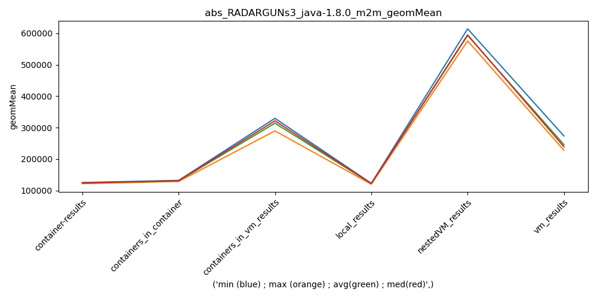
geomMean of all metrics from geomMean of all keys
{'MIN': [125772.04063738612, 132468.60228551953, 329846.11553441855, 123298.84536347764, 613053.5451324682, 275553.66382873623], 'MAX': [121593.27274761074, 128510.07758657589, 288773.8260999231, 119782.4930695676, 565049.2684715764, 228826.74970814865], 'AVG': [123974.55337538257, 130741.52048456787, 314453.8996255018, 122045.35994643677, 591821.2701931393, 247029.5417975848], 'MED': [124425.84369634943, 131048.749676459, 321580.11840594106, 122260.9570050467, 593584.0506727927, 240066.75914133716]}
RADARGUNs3 java-1.8.0 geomMean geomMean
MIN 125772.04063738612 container-results
MIN 132468.60228551953 containers_in_container
MIN 329846.11553441855 containers_in_vm_results
MIN 123298.84536347764 local_results
MIN 613053.5451324682 nestedVM_results
MIN 275553.66382873623 vm_results
MAX 121593.27274761074 container-results
MAX 128510.07758657589 containers_in_container
MAX 288773.8260999231 containers_in_vm_results
MAX 119782.4930695676 local_results
MAX 565049.2684715764 nestedVM_results
MAX 228826.74970814865 vm_results
AVG 123974.55337538257 container-results
AVG 130741.52048456787 containers_in_container
AVG 314453.8996255018 containers_in_vm_results
AVG 122045.35994643677 local_results
AVG 591821.2701931393 nestedVM_results
AVG 247029.5417975848 vm_results
MED 124425.84369634943 container-results
MED 131048.749676459 containers_in_container
MED 321580.11840594106 containers_in_vm_results
MED 122260.9570050467 local_results
MED 593584.0506727927 nestedVM_results
MED 240066.75914133716 vm_results
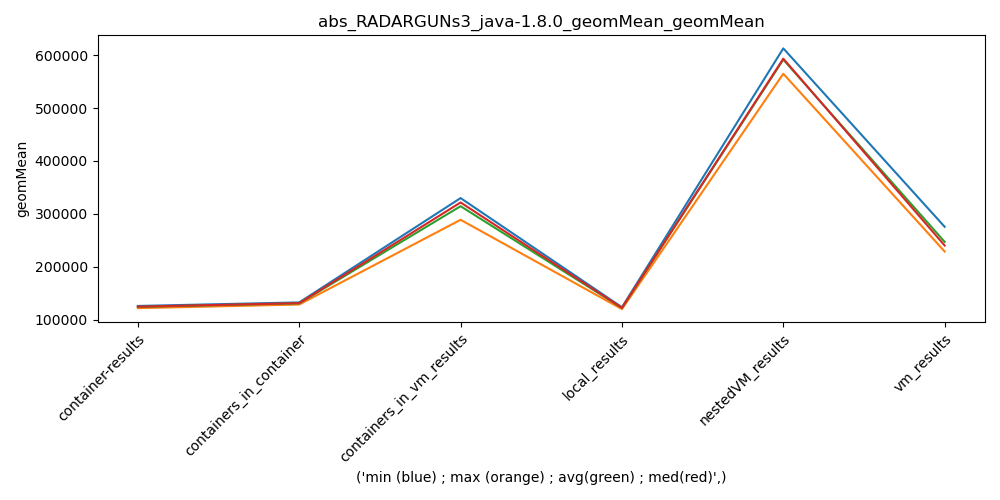
java-11
all runs of one jdk are treated as INDIVIDUAL items
BasicOperations.Put.ResponseTimeMean
RADARGUNs3 java-11 BasicOperations.Put.ResponseTimeMean where all runs of one jdk are treated as INDIVIDUAL items
MIN -265946.0 container-results
MIN -278152.0 containers_in_container
MIN -675993.0 containers_in_vm_results
MIN -262271.0 local_results
MIN -1277577.0 nestedVM_results
MIN -561081.0 vm_results
MAX -257100.0 container-results
MAX -268984.0 containers_in_container
MAX -553810.0 containers_in_vm_results
MAX -254120.0 local_results
MAX -1166261.0 nestedVM_results
MAX -463829.0 vm_results
AVG -260301.36363636365 container-results
AVG -272914.83636363636 containers_in_container
AVG -620410.4 containers_in_vm_results
AVG -257516.74545454545 local_results
AVG -1219199.888888889 nestedVM_results
AVG -504583.9636363636 vm_results
MED -260185.0 container-results
MED -272678.0 containers_in_container
MED -633992.0 containers_in_vm_results
MED -257330.0 local_results
MED -1225098.0 nestedVM_results
MED -502359.0 vm_results

BasicOperations.Get.ResponseTimeMean
RADARGUNs3 java-11 BasicOperations.Get.ResponseTimeMean where all runs of one jdk are treated as INDIVIDUAL items
MIN -65879.0 container-results
MIN -69588.0 containers_in_container
MIN -169475.0 containers_in_vm_results
MIN -64919.0 local_results
MIN -313639.0 nestedVM_results
MIN -138078.0 vm_results
MAX -63070.0 container-results
MAX -66340.0 containers_in_container
MAX -139130.0 containers_in_vm_results
MAX -62633.0 local_results
MAX -287141.0 nestedVM_results
MAX -121129.0 vm_results
AVG -64362.56363636364 container-results
AVG -67714.36363636363 containers_in_container
AVG -154244.30909090908 containers_in_vm_results
AVG -63485.27272727273 local_results
AVG -299779.22222222225 nestedVM_results
AVG -128846.03636363636 vm_results
MED -64368.0 container-results
MED -67666.0 containers_in_container
MED -157640.0 containers_in_vm_results
MED -63356.0 local_results
MED -300847.0 nestedVM_results
MED -128578.0 vm_results
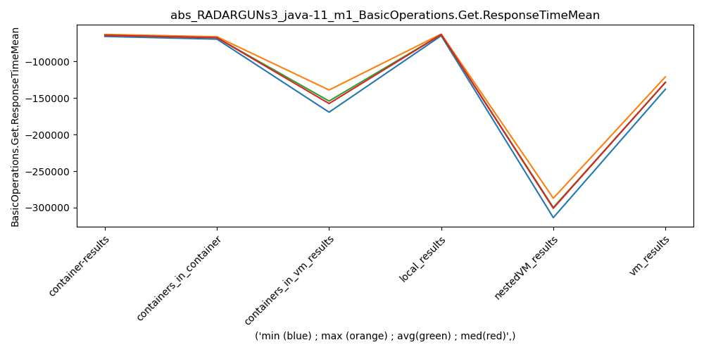
geomMean of all keys (benchmark meassured relativre accuracy)
{'MIN': [132364.1059124414, 139125.9910153383, 338472.91424130235, 130485.13727241122, 633007.0874034507, 278339.61686759576], 'MAX': [127339.2987258843, 133582.92765170257, 277581.67320628354, 126159.81119199569, 578689.3379016068, 237029.83555029522], 'AVG': [129435.94200096697, 135942.0997016228, 309345.718413581, 127861.33433146038, 604558.346584125, 254977.73182613158], 'MED': [129412.47266009563, 135834.56683775305, 316136.8356898639, 127684.76604513163, 607097.239333206, 254150.18296668606]}
RADARGUNs3 java-11 geomMean where all runs of one jdk are treated as INDIVIDUAL items
MIN 132364.1059124414 container-results
MIN 139125.9910153383 containers_in_container
MIN 338472.91424130235 containers_in_vm_results
MIN 130485.13727241122 local_results
MIN 633007.0874034507 nestedVM_results
MIN 278339.61686759576 vm_results
MAX 127339.2987258843 container-results
MAX 133582.92765170257 containers_in_container
MAX 277581.67320628354 containers_in_vm_results
MAX 126159.81119199569 local_results
MAX 578689.3379016068 nestedVM_results
MAX 237029.83555029522 vm_results
AVG 129435.94200096697 container-results
AVG 135942.0997016228 containers_in_container
AVG 309345.718413581 containers_in_vm_results
AVG 127861.33433146038 local_results
AVG 604558.346584125 nestedVM_results
AVG 254977.73182613158 vm_results
MED 129412.47266009563 container-results
MED 135834.56683775305 containers_in_container
MED 316136.8356898639 containers_in_vm_results
MED 127684.76604513163 local_results
MED 607097.239333206 nestedVM_results
MED 254150.18296668606 vm_results
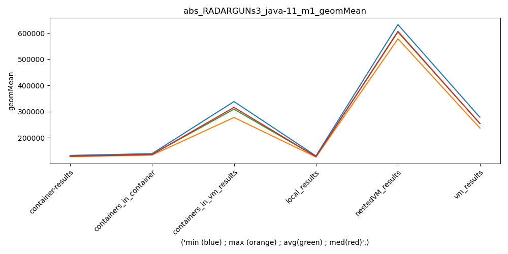
all runs of one jdk were made AVARAGE before processing
BasicOperations.Put.ResponseTimeMean
RADARGUNs3 java-11 BasicOperations.Put.ResponseTimeMean where all runs of one jdk were made AVARAGE before processing
MIN -263597.4 container-results
MIN -276342.2 containers_in_container
MIN -665989.4 containers_in_vm_results
MIN -261464.2 local_results
MIN -1246495.0 nestedVM_results
MIN -541069.6 vm_results
MAX -258289.8 container-results
MAX -270926.0 containers_in_container
MAX -565957.4 containers_in_vm_results
MAX -255911.0 local_results
MAX -1194521.2 nestedVM_results
MAX -476014.0 vm_results
AVG -260301.36363636365 container-results
AVG -272914.83636363636 containers_in_container
AVG -620410.4 containers_in_vm_results
AVG -257516.74545454548 local_results
AVG -1219087.7181818183 nestedVM_results
AVG -504583.9636363636 vm_results
MED -259505.0 container-results
MED -272518.6 containers_in_container
MED -638040.4 containers_in_vm_results
MED -257273.0 local_results
MED -1218404.8 nestedVM_results
MED -490034.0 vm_results

BasicOperations.Get.ResponseTimeMean
RADARGUNs3 java-11 BasicOperations.Get.ResponseTimeMean where all runs of one jdk were made AVARAGE before processing
MIN -65356.2 container-results
MIN -68676.2 containers_in_container
MIN -165422.6 containers_in_vm_results
MIN -64557.4 local_results
MIN -306057.0 nestedVM_results
MIN -134714.2 vm_results
MAX -63673.6 container-results
MAX -67157.2 containers_in_container
MAX -141115.0 containers_in_vm_results
MAX -63032.6 local_results
MAX -294044.6 nestedVM_results
MAX -123572.8 vm_results
AVG -64362.56363636363 container-results
AVG -67714.36363636363 containers_in_container
AVG -154244.30909090908 containers_in_vm_results
AVG -63485.27272727273 local_results
AVG -299725.2818181818 nestedVM_results
AVG -128846.03636363638 vm_results
MED -64268.4 container-results
MED -67560.4 containers_in_container
MED -158383.4 containers_in_vm_results
MED -63324.2 local_results
MED -299475.2 nestedVM_results
MED -126373.8 vm_results

geomMean of all keys (benchmark meassured relativre accuracy)
{'MIN': [131254.4261877671, 137761.1418203261, 331918.20998619526, 129920.93343676376, 617655.6647639525, 269981.03323811473], 'MAX': [128242.90003458281, 134887.47742915203, 282604.10205975425, 127006.83327522186, 592657.1592797306, 242533.2612636873], 'AVG': [129435.94200096697, 135942.0997016228, 309345.718413581, 127861.33433146038, 604476.1450157729, 254977.7318261316], 'MED': [129143.21949680518, 135688.8559294388, 317891.5033299255, 127638.57922509166, 604054.6508064978, 248852.28290935972]}
RADARGUNs3 java-11 geomMean where all runs of one jdk were made AVARAGE before processing
MIN 131254.4261877671 container-results
MIN 137761.1418203261 containers_in_container
MIN 331918.20998619526 containers_in_vm_results
MIN 129920.93343676376 local_results
MIN 617655.6647639525 nestedVM_results
MIN 269981.03323811473 vm_results
MAX 128242.90003458281 container-results
MAX 134887.47742915203 containers_in_container
MAX 282604.10205975425 containers_in_vm_results
MAX 127006.83327522186 local_results
MAX 592657.1592797306 nestedVM_results
MAX 242533.2612636873 vm_results
AVG 129435.94200096697 container-results
AVG 135942.0997016228 containers_in_container
AVG 309345.718413581 containers_in_vm_results
AVG 127861.33433146038 local_results
AVG 604476.1450157729 nestedVM_results
AVG 254977.7318261316 vm_results
MED 129143.21949680518 container-results
MED 135688.8559294388 containers_in_container
MED 317891.5033299255 containers_in_vm_results
MED 127638.57922509166 local_results
MED 604054.6508064978 nestedVM_results
MED 248852.28290935972 vm_results
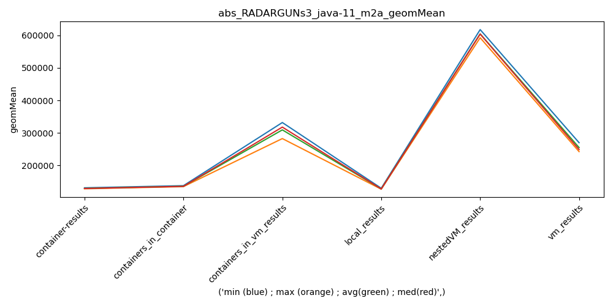
all runs of one jdk were made MEDIAN before processing
BasicOperations.Put.ResponseTimeMean
RADARGUNs3 java-11 BasicOperations.Put.ResponseTimeMean where all runs of one jdk were made MEDIAN before processing
MIN -263698.0 container-results
MIN -276552.0 containers_in_container
MIN -670610.0 containers_in_vm_results
MIN -261298.0 local_results
MIN -1265388.0 nestedVM_results
MIN -542115.0 vm_results
MAX -257654.0 container-results
MAX -270239.0 containers_in_container
MAX -563217.0 containers_in_vm_results
MAX -255576.0 local_results
MAX -1190770.0 nestedVM_results
MAX -478465.0 vm_results
AVG -260151.81818181818 container-results
AVG -272757.2727272727 containers_in_container
AVG -618863.3636363636 containers_in_vm_results
AVG -257537.27272727274 local_results
AVG -1221693.7272727273 nestedVM_results
AVG -503827.45454545453 vm_results
MED -259772.0 container-results
MED -272678.0 containers_in_container
MED -637001.0 containers_in_vm_results
MED -257141.0 local_results
MED -1219221.0 nestedVM_results
MED -489734.0 vm_results
BasicOperations.Get.ResponseTimeMean
RADARGUNs3 java-11 BasicOperations.Get.ResponseTimeMean where all runs of one jdk were made MEDIAN before processing
MIN -65364.0 container-results
MIN -68670.0 containers_in_container
MIN -165606.0 containers_in_vm_results
MIN -64628.0 local_results
MIN -309915.0 nestedVM_results
MIN -134683.0 vm_results
MAX -63635.0 container-results
MAX -67021.0 containers_in_container
MAX -140912.0 containers_in_vm_results
MAX -63097.0 local_results
MAX -291380.0 nestedVM_results
MAX -122880.0 vm_results
AVG -64357.0 container-results
AVG -67694.0 containers_in_container
AVG -154011.18181818182 containers_in_vm_results
AVG -63467.818181818184 local_results
AVG -299808.45454545453 nestedVM_results
AVG -128523.81818181818 vm_results
MED -64365.0 container-results
MED -67627.0 containers_in_container
MED -158209.0 containers_in_vm_results
MED -63374.0 local_results
MED -300847.0 nestedVM_results
MED -126479.0 vm_results

geomMean of all keys (benchmark meassured relativre accuracy)
{'MIN': [131287.30354455454, 137807.20532686234, 333252.21628670377, 129950.63348825969, 626228.9693235215, 270210.42641800485], 'MAX': [128046.13344416145, 134579.6716410023, 281716.2293940482, 126988.49897530091, 589038.6766588421, 242474.2856469527], 'AVG': [129393.16273562243, 135882.4154186258, 308726.21854583645, 127848.85138512535, 605205.8396128647, 254467.73501371103], 'MED': [129306.70817865561, 135795.41636594367, 317457.5423722045, 127655.99764210063, 605639.3152586777, 248879.6226813276]}
RADARGUNs3 java-11 geomMean where all runs of one jdk were made MEDIAN before processing
MIN 131287.30354455454 container-results
MIN 137807.20532686234 containers_in_container
MIN 333252.21628670377 containers_in_vm_results
MIN 129950.63348825969 local_results
MIN 626228.9693235215 nestedVM_results
MIN 270210.42641800485 vm_results
MAX 128046.13344416145 container-results
MAX 134579.6716410023 containers_in_container
MAX 281716.2293940482 containers_in_vm_results
MAX 126988.49897530091 local_results
MAX 589038.6766588421 nestedVM_results
MAX 242474.2856469527 vm_results
AVG 129393.16273562243 container-results
AVG 135882.4154186258 containers_in_container
AVG 308726.21854583645 containers_in_vm_results
AVG 127848.85138512535 local_results
AVG 605205.8396128647 nestedVM_results
AVG 254467.73501371103 vm_results
MED 129306.70817865561 container-results
MED 135795.41636594367 containers_in_container
MED 317457.5423722045 containers_in_vm_results
MED 127655.99764210063 local_results
MED 605639.3152586777 nestedVM_results
MED 248879.6226813276 vm_results
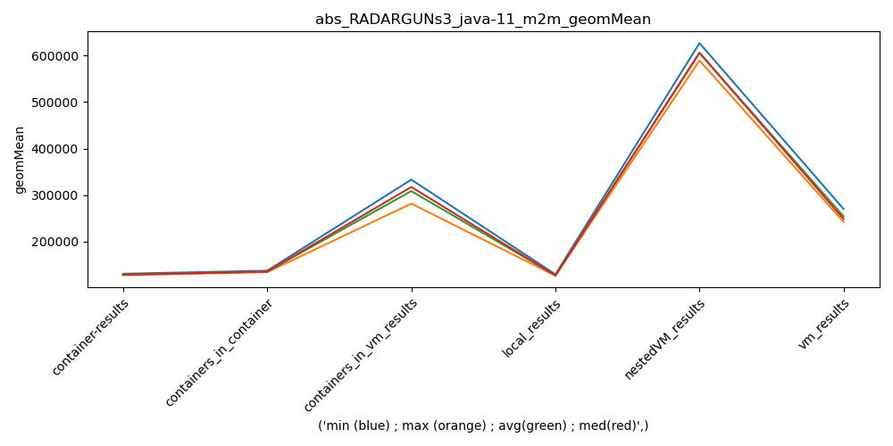
geomMean of all metrics from geomMean of all keys
{'MIN': [131634.2708865022, 138230.00064363953, 334535.86323206365, 130118.64336976229, 625599.008686384, 272816.1825592944], 'MAX': [127875.52144717929, 134348.87007427137, 280625.4399625383, 126717.76448105017, 586765.1015767981, 240665.22250603043], 'AVG': [129421.68067458863, 135922.2020283685, 309139.08045757463, 127857.17321393074, 604746.689042671, 254807.6194207298], 'MED': [129287.41932694714, 135772.93241457018, 317161.0819008488, 127659.77955026693, 605595.7937785813, 250615.0407987604]}
RADARGUNs3 java-11 geomMean geomMean
MIN 131634.2708865022 container-results
MIN 138230.00064363953 containers_in_container
MIN 334535.86323206365 containers_in_vm_results
MIN 130118.64336976229 local_results
MIN 625599.008686384 nestedVM_results
MIN 272816.1825592944 vm_results
MAX 127875.52144717929 container-results
MAX 134348.87007427137 containers_in_container
MAX 280625.4399625383 containers_in_vm_results
MAX 126717.76448105017 local_results
MAX 586765.1015767981 nestedVM_results
MAX 240665.22250603043 vm_results
AVG 129421.68067458863 container-results
AVG 135922.2020283685 containers_in_container
AVG 309139.08045757463 containers_in_vm_results
AVG 127857.17321393074 local_results
AVG 604746.689042671 nestedVM_results
AVG 254807.6194207298 vm_results
MED 129287.41932694714 container-results
MED 135772.93241457018 containers_in_container
MED 317161.0819008488 containers_in_vm_results
MED 127659.77955026693 local_results
MED 605595.7937785813 nestedVM_results
MED 250615.0407987604 vm_results
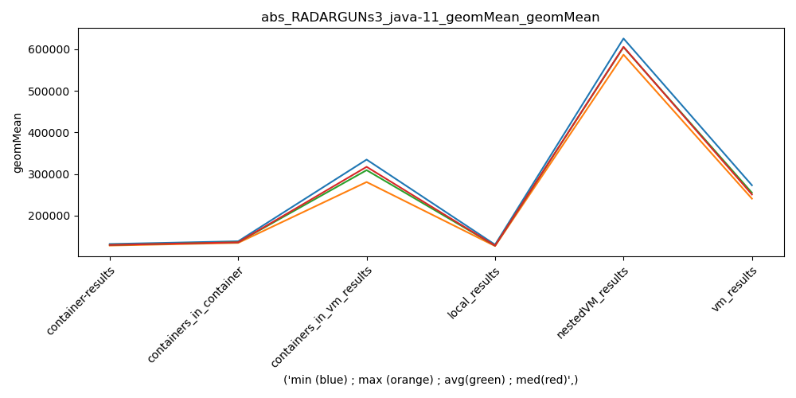
java-17
all runs of one jdk are treated as INDIVIDUAL items
BasicOperations.Put.ResponseTimeMean
RADARGUNs3 java-17 BasicOperations.Put.ResponseTimeMean where all runs of one jdk are treated as INDIVIDUAL items
MIN -273808.0 container-results
MIN -286594.0 containers_in_container
MIN -653598.0 containers_in_vm_results
MIN -282502.0 local_results
MIN -970980.0 nestedVM_results
MIN -547646.0 vm_results
MAX -267361.0 container-results
MAX -277968.0 containers_in_container
MAX -556446.0 containers_in_vm_results
MAX -274264.0 local_results
MAX -862590.0 nestedVM_results
MAX -437027.0 vm_results
AVG -270165.44444444444 container-results
AVG -283886.44444444444 containers_in_container
AVG -604229.6046511628 containers_in_vm_results
AVG -278188.6 local_results
AVG -927884.1777777778 nestedVM_results
AVG -489771.68888888886 vm_results
MED -270132.0 container-results
MED -284074.0 containers_in_container
MED -617290.0 containers_in_vm_results
MED -278179.0 local_results
MED -935002.0 nestedVM_results
MED -482845.0 vm_results

BasicOperations.Get.ResponseTimeMean
RADARGUNs3 java-17 BasicOperations.Get.ResponseTimeMean where all runs of one jdk are treated as INDIVIDUAL items
MIN -65845.0 container-results
MIN -69518.0 containers_in_container
MIN -164023.0 containers_in_vm_results
MIN -67748.0 local_results
MIN -246408.0 nestedVM_results
MIN -136170.0 vm_results
MAX -63922.0 container-results
MAX -67277.0 containers_in_container
MAX -137862.0 containers_in_vm_results
MAX -65528.0 local_results
MAX -219316.0 nestedVM_results
MAX -113370.0 vm_results
AVG -65135.2 container-results
AVG -68625.4 containers_in_container
AVG -150772.0 containers_in_vm_results
AVG -66720.48888888888 local_results
AVG -234516.04444444444 nestedVM_results
AVG -124669.26666666666 vm_results
MED -65129.0 container-results
MED -68659.0 containers_in_container
MED -152863.0 containers_in_vm_results
MED -66728.0 local_results
MED -235466.0 nestedVM_results
MED -123931.0 vm_results
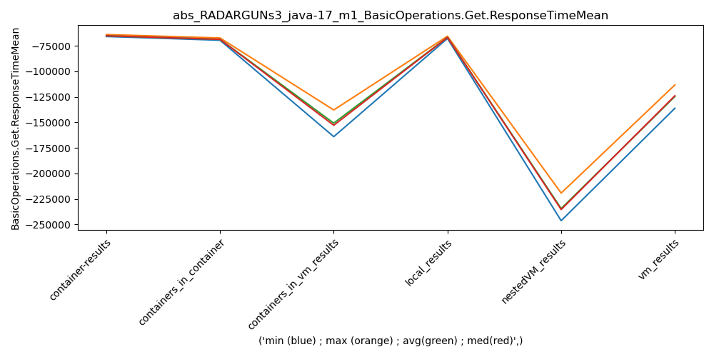
geomMean of all keys (benchmark meassured relativre accuracy)
{'MIN': [134271.6938151895, 141150.42221686762, 327421.906344093, 138343.5777186639, 489139.28470324277, 273080.4932982215], 'MAX': [130729.68232960715, 136751.06265035018, 276970.6815747833, 134059.58150016732, 434948.02958514483, 222588.74857009284], 'AVG': [132654.74080098976, 139577.29329865146, 301829.2662292129, 136238.31838112048, 466480.14649610774, 247102.15961798592], 'MED': [132640.21648052297, 139657.56966953134, 307182.03279163316, 136243.6358587072, 469213.36397421587, 244621.06142971417]}
RADARGUNs3 java-17 geomMean where all runs of one jdk are treated as INDIVIDUAL items
MIN 134271.6938151895 container-results
MIN 141150.42221686762 containers_in_container
MIN 327421.906344093 containers_in_vm_results
MIN 138343.5777186639 local_results
MIN 489139.28470324277 nestedVM_results
MIN 273080.4932982215 vm_results
MAX 130729.68232960715 container-results
MAX 136751.06265035018 containers_in_container
MAX 276970.6815747833 containers_in_vm_results
MAX 134059.58150016732 local_results
MAX 434948.02958514483 nestedVM_results
MAX 222588.74857009284 vm_results
AVG 132654.74080098976 container-results
AVG 139577.29329865146 containers_in_container
AVG 301829.2662292129 containers_in_vm_results
AVG 136238.31838112048 local_results
AVG 466480.14649610774 nestedVM_results
AVG 247102.15961798592 vm_results
MED 132640.21648052297 container-results
MED 139657.56966953134 containers_in_container
MED 307182.03279163316 containers_in_vm_results
MED 136243.6358587072 local_results
MED 469213.36397421587 nestedVM_results
MED 244621.06142971417 vm_results
all runs of one jdk were made AVARAGE before processing
BasicOperations.Put.ResponseTimeMean
RADARGUNs3 java-17 BasicOperations.Put.ResponseTimeMean where all runs of one jdk were made AVARAGE before processing
MIN -271531.8 container-results
MIN -285377.6 containers_in_container
MIN -641453.4 containers_in_vm_results
MIN -279676.2 local_results
MIN -946343.2 nestedVM_results
MIN -532096.6 vm_results
MAX -268216.2 container-results
MAX -280602.8 containers_in_container
MAX -568976.8 containers_in_vm_results
MAX -275882.4 local_results
MAX -912166.6 nestedVM_results
MAX -450710.6 vm_results
AVG -270165.44444444444 container-results
AVG -283886.44444444444 containers_in_container
AVG -605026.2296296296 containers_in_vm_results
AVG -278188.6 local_results
AVG -927884.1777777778 nestedVM_results
AVG -489771.6888888889 vm_results
MED -270317.2 container-results
MED -284121.6 containers_in_container
MED -622153.6666666666 containers_in_vm_results
MED -278333.8 local_results
MED -924219.4 nestedVM_results
MED -474440.2 vm_results
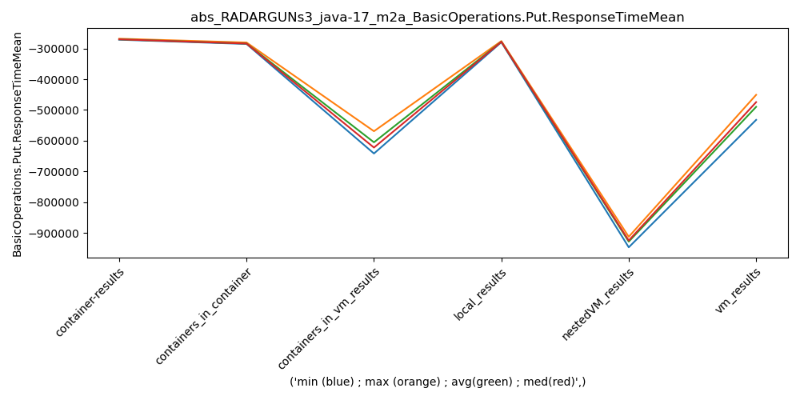
BasicOperations.Get.ResponseTimeMean
RADARGUNs3 java-17 BasicOperations.Get.ResponseTimeMean where all runs of one jdk were made AVARAGE before processing
MIN -65443.6 container-results
MIN -68860.6 containers_in_container
MIN -160134.8 containers_in_vm_results
MIN -67080.6 local_results
MIN -238277.4 nestedVM_results
MIN -132853.8 vm_results
MAX -64500.0 container-results
MAX -68096.4 containers_in_container
MAX -141915.4 containers_in_vm_results
MAX -65941.4 local_results
MAX -230289.0 nestedVM_results
MAX -116948.6 vm_results
AVG -65135.200000000004 container-results
AVG -68625.4 containers_in_container
AVG -150975.22962962964 containers_in_vm_results
AVG -66720.4888888889 local_results
AVG -234516.04444444444 nestedVM_results
AVG -124669.26666666666 vm_results
MED -65196.6 container-results
MED -68720.8 containers_in_container
MED -155344.66666666666 containers_in_vm_results
MED -66854.4 local_results
MED -233822.6 nestedVM_results
MED -121934.2 vm_results

geomMean of all keys (benchmark meassured relativre accuracy)
{'MIN': [133304.23289033247, 140182.99740895827, 320498.0685094997, 136970.24239490854, 474860.18700632296, 265877.895427732], 'MAX': [131529.25492072097, 138231.8360940055, 284159.4097733172, 134877.9881647113, 458325.14020878234, 229586.5276429782], 'AVG': [132654.74080098976, 139577.29329865146, 302231.65610220644, 136238.3183811205, 466480.14649610774, 247102.15961798592], 'MED': [132754.51917550678, 139732.11387966617, 310883.0229584397, 136410.55383920996, 464869.21072323126, 240521.28021204277]}
RADARGUNs3 java-17 geomMean where all runs of one jdk were made AVARAGE before processing
MIN 133304.23289033247 container-results
MIN 140182.99740895827 containers_in_container
MIN 320498.0685094997 containers_in_vm_results
MIN 136970.24239490854 local_results
MIN 474860.18700632296 nestedVM_results
MIN 265877.895427732 vm_results
MAX 131529.25492072097 container-results
MAX 138231.8360940055 containers_in_container
MAX 284159.4097733172 containers_in_vm_results
MAX 134877.9881647113 local_results
MAX 458325.14020878234 nestedVM_results
MAX 229586.5276429782 vm_results
AVG 132654.74080098976 container-results
AVG 139577.29329865146 containers_in_container
AVG 302231.65610220644 containers_in_vm_results
AVG 136238.3183811205 local_results
AVG 466480.14649610774 nestedVM_results
AVG 247102.15961798592 vm_results
MED 132754.51917550678 container-results
MED 139732.11387966617 containers_in_container
MED 310883.0229584397 containers_in_vm_results
MED 136410.55383920996 local_results
MED 464869.21072323126 nestedVM_results
MED 240521.28021204277 vm_results
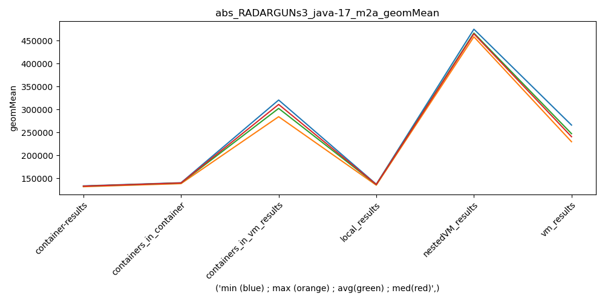
all runs of one jdk were made MEDIAN before processing
BasicOperations.Put.ResponseTimeMean
RADARGUNs3 java-17 BasicOperations.Put.ResponseTimeMean where all runs of one jdk were made MEDIAN before processing
MIN -271329.0 container-results
MIN -285257.0 containers_in_container
MIN -638986.0 containers_in_vm_results
MIN -279819.0 local_results
MIN -951343.0 nestedVM_results
MIN -531075.0 vm_results
MAX -268156.0 container-results
MAX -281265.0 containers_in_container
MAX -571208.0 containers_in_vm_results
MAX -276242.0 local_results
MAX -916500.0 nestedVM_results
MAX -446584.0 vm_results
AVG -270010.0 container-results
AVG -283790.44444444444 containers_in_container
AVG -604999.0 containers_in_vm_results
AVG -278316.0 local_results
AVG -932170.6666666666 nestedVM_results
AVG -487489.0 vm_results
MED -270211.0 container-results
MED -283793.0 containers_in_container
MED -623482.0 containers_in_vm_results
MED -278539.0 local_results
MED -935002.0 nestedVM_results
MED -474756.0 vm_results

BasicOperations.Get.ResponseTimeMean
RADARGUNs3 java-17 BasicOperations.Get.ResponseTimeMean where all runs of one jdk were made MEDIAN before processing
MIN -65751.0 container-results
MIN -68914.0 containers_in_container
MIN -159645.0 containers_in_vm_results
MIN -67162.0 local_results
MIN -239109.0 nestedVM_results
MIN -132836.0 vm_results
MAX -64452.0 container-results
MAX -68178.0 containers_in_container
MAX -141830.0 containers_in_vm_results
MAX -65864.0 local_results
MAX -231798.0 nestedVM_results
MAX -116458.0 vm_results
AVG -65186.444444444445 container-results
AVG -68657.22222222222 containers_in_container
AVG -150904.77777777778 containers_in_vm_results
AVG -66666.55555555556 local_results
AVG -235931.88888888888 nestedVM_results
AVG -124315.22222222222 vm_results
MED -65242.0 container-results
MED -68696.0 containers_in_container
MED -155328.0 containers_in_vm_results
MED -66821.0 local_results
MED -236496.0 nestedVM_results
MED -121685.0 vm_results
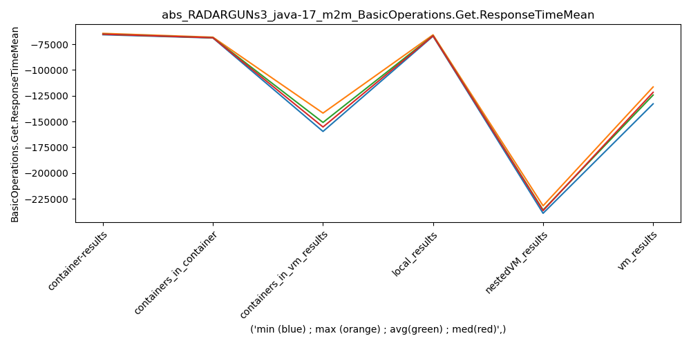
geomMean of all keys (benchmark meassured relativre accuracy)
{'MIN': [133567.03589958115, 140207.70627180234, 319391.48387206567, 137088.3061314859, 476943.05046514724, 265604.741486292], 'MAX': [131465.54876468587, 138477.74250759577, 284630.34033637383, 134886.63050132137, 460915.24925955746, 228053.23824054768], 'AVG': [132668.72979132817, 139586.04374637685, 302154.3308489517, 136214.42315702108, 468965.65562254284, 246175.35084952938], 'MED': [132774.64389709354, 139626.0861300638, 311198.02714027604, 136426.73681870426, 470238.4852306327, 240355.32833702688]}
RADARGUNs3 java-17 geomMean where all runs of one jdk were made MEDIAN before processing
MIN 133567.03589958115 container-results
MIN 140207.70627180234 containers_in_container
MIN 319391.48387206567 containers_in_vm_results
MIN 137088.3061314859 local_results
MIN 476943.05046514724 nestedVM_results
MIN 265604.741486292 vm_results
MAX 131465.54876468587 container-results
MAX 138477.74250759577 containers_in_container
MAX 284630.34033637383 containers_in_vm_results
MAX 134886.63050132137 local_results
MAX 460915.24925955746 nestedVM_results
MAX 228053.23824054768 vm_results
AVG 132668.72979132817 container-results
AVG 139586.04374637685 containers_in_container
AVG 302154.3308489517 containers_in_vm_results
AVG 136214.42315702108 local_results
AVG 468965.65562254284 nestedVM_results
AVG 246175.35084952938 vm_results
MED 132774.64389709354 container-results
MED 139626.0861300638 containers_in_container
MED 311198.02714027604 containers_in_vm_results
MED 136426.73681870426 local_results
MED 470238.4852306327 nestedVM_results
MED 240355.32833702688 vm_results
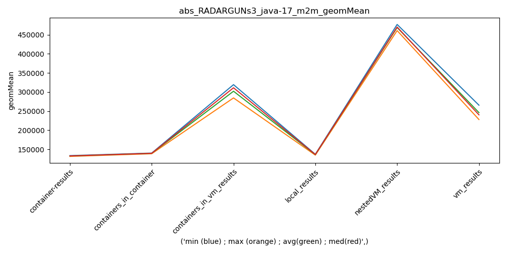
geomMean of all metrics from geomMean of all keys
{'MIN': [133713.69761375326, 140512.98806520252, 322417.6640508221, 137465.97365850385, 480273.11499351135, 268165.50450181164], 'MAX': [131240.99313125722, 137818.0985708773, 281898.2271516964, 134607.5071889395, 451243.2392978332, 226722.84551956237], 'AVG': [132659.403633868, 139580.2100536078, 302071.7007359029, 136230.3528407029, 467307.1823962827, 246792.83631145913], 'MED': [132723.1133127304, 139671.91615101602, 309748.9791944311, 136360.28371482747, 468101.2223797307, 241824.5393198123]}
RADARGUNs3 java-17 geomMean geomMean
MIN 133713.69761375326 container-results
MIN 140512.98806520252 containers_in_container
MIN 322417.6640508221 containers_in_vm_results
MIN 137465.97365850385 local_results
MIN 480273.11499351135 nestedVM_results
MIN 268165.50450181164 vm_results
MAX 131240.99313125722 container-results
MAX 137818.0985708773 containers_in_container
MAX 281898.2271516964 containers_in_vm_results
MAX 134607.5071889395 local_results
MAX 451243.2392978332 nestedVM_results
MAX 226722.84551956237 vm_results
AVG 132659.403633868 container-results
AVG 139580.2100536078 containers_in_container
AVG 302071.7007359029 containers_in_vm_results
AVG 136230.3528407029 local_results
AVG 467307.1823962827 nestedVM_results
AVG 246792.83631145913 vm_results
MED 132723.1133127304 container-results
MED 139671.91615101602 containers_in_container
MED 309748.9791944311 containers_in_vm_results
MED 136360.28371482747 local_results
MED 468101.2223797307 nestedVM_results
MED 241824.5393198123 vm_results
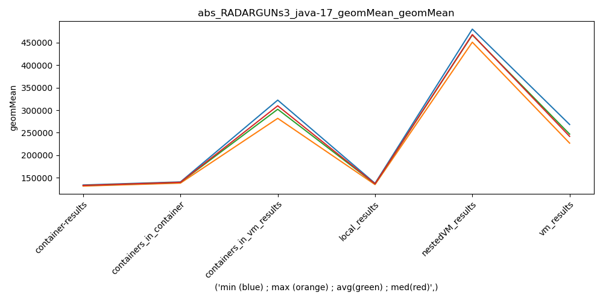
java-21
all runs of one jdk are treated as INDIVIDUAL items
BasicOperations.Put.ResponseTimeMean
RADARGUNs3 java-21 BasicOperations.Put.ResponseTimeMean where all runs of one jdk are treated as INDIVIDUAL items
MIN -276457.0 container-results
MIN -287394.0 containers_in_container
MIN -601106.0 containers_in_vm_results
MIN -283989.0 local_results
MIN -978990.0 nestedVM_results
MIN -545566.0 vm_results
MAX -268107.0 container-results
MAX -280412.0 containers_in_container
MAX -559144.0 containers_in_vm_results
MAX -275684.0 local_results
MAX -840728.0 nestedVM_results
MAX -509993.0 vm_results
AVG -273234.4 container-results
AVG -285042.6857142857 containers_in_container
AVG -576827.8 containers_in_vm_results
AVG -280750.97142857144 local_results
AVG -913226.5428571429 nestedVM_results
AVG -530845.5428571429 vm_results
MED -273243.0 container-results
MED -285746.0 containers_in_container
MED -573722.0 containers_in_vm_results
MED -281040.0 local_results
MED -907782.0 nestedVM_results
MED -533253.0 vm_results
BasicOperations.Get.ResponseTimeMean
RADARGUNs3 java-21 BasicOperations.Get.ResponseTimeMean where all runs of one jdk are treated as INDIVIDUAL items
MIN -67050.0 container-results
MIN -69975.0 containers_in_container
MIN -149589.0 containers_in_vm_results
MIN -68688.0 local_results
MIN -244439.0 nestedVM_results
MIN -136131.0 vm_results
MAX -64459.0 container-results
MAX -67572.0 containers_in_container
MAX -138359.0 containers_in_vm_results
MAX -66022.0 local_results
MAX -215229.0 nestedVM_results
MAX -127276.0 vm_results
AVG -65954.31428571428 container-results
AVG -69103.25714285714 containers_in_container
AVG -143746.6857142857 containers_in_vm_results
AVG -67536.08571428571 local_results
AVG -231361.34285714285 nestedVM_results
AVG -132511.88571428572 vm_results
MED -66041.0 container-results
MED -69265.0 containers_in_container
MED -143086.0 containers_in_vm_results
MED -67557.0 local_results
MED -230548.0 nestedVM_results
MED -132434.0 vm_results
geomMean of all keys (benchmark meassured relativre accuracy)
{'MIN': [136148.60208610297, 141811.12491620675, 299864.71188521, 139666.1606546124, 489186.40272395144, 272522.37549603154], 'MAX': [131460.67515801065, 137651.73324008673, 278141.33942296315, 134911.85658792188, 425381.06059391034, 254774.15306109842], 'AVG': [134242.2716258503, 140347.34770420459, 287953.26787147747, 137698.29944762928, 459657.8284857277, 265223.1963969662], 'MED': [134332.57595609486, 140684.74220753295, 286516.2928909977, 137790.49052819284, 457479.3159652139, 265745.7954549799]}
RADARGUNs3 java-21 geomMean where all runs of one jdk are treated as INDIVIDUAL items
MIN 136148.60208610297 container-results
MIN 141811.12491620675 containers_in_container
MIN 299864.71188521 containers_in_vm_results
MIN 139666.1606546124 local_results
MIN 489186.40272395144 nestedVM_results
MIN 272522.37549603154 vm_results
MAX 131460.67515801065 container-results
MAX 137651.73324008673 containers_in_container
MAX 278141.33942296315 containers_in_vm_results
MAX 134911.85658792188 local_results
MAX 425381.06059391034 nestedVM_results
MAX 254774.15306109842 vm_results
AVG 134242.2716258503 container-results
AVG 140347.34770420459 containers_in_container
AVG 287953.26787147747 containers_in_vm_results
AVG 137698.29944762928 local_results
AVG 459657.8284857277 nestedVM_results
AVG 265223.1963969662 vm_results
MED 134332.57595609486 container-results
MED 140684.74220753295 containers_in_container
MED 286516.2928909977 containers_in_vm_results
MED 137790.49052819284 local_results
MED 457479.3159652139 nestedVM_results
MED 265745.7954549799 vm_results
all runs of one jdk were made AVARAGE before processing
BasicOperations.Put.ResponseTimeMean
RADARGUNs3 java-21 BasicOperations.Put.ResponseTimeMean where all runs of one jdk were made AVARAGE before processing
MIN -275038.8 container-results
MIN -286834.0 containers_in_container
MIN -584264.6 containers_in_vm_results
MIN -283201.4 local_results
MIN -942617.6 nestedVM_results
MIN -538188.4 vm_results
MAX -270510.0 container-results
MAX -282145.8 containers_in_container
MAX -569930.2 containers_in_vm_results
MAX -276774.2 local_results
MAX -882026.0 nestedVM_results
MAX -519879.0 vm_results
AVG -273234.4 container-results
AVG -285042.6857142857 containers_in_container
AVG -576827.8 containers_in_vm_results
AVG -280750.97142857144 local_results
AVG -913226.5428571429 nestedVM_results
AVG -530845.5428571429 vm_results
MED -273036.4 container-results
MED -284845.6 containers_in_container
MED -577048.4 containers_in_vm_results
MED -281180.8 local_results
MED -914523.8 nestedVM_results
MED -533116.2 vm_results
BasicOperations.Get.ResponseTimeMean
RADARGUNs3 java-21 BasicOperations.Get.ResponseTimeMean where all runs of one jdk were made AVARAGE before processing
MIN -66393.8 container-results
MIN -69564.8 containers_in_container
MIN -145503.6 containers_in_vm_results
MIN -68114.8 local_results
MIN -237536.2 nestedVM_results
MIN -134152.0 vm_results
MAX -65264.0 container-results
MAX -68542.0 containers_in_container
MAX -142015.2 containers_in_vm_results
MAX -66415.2 local_results
MAX -224470.8 nestedVM_results
MAX -130563.0 vm_results
AVG -65954.31428571428 container-results
AVG -69103.25714285715 containers_in_container
AVG -143746.68571428573 containers_in_vm_results
AVG -67536.08571428571 local_results
AVG -231361.34285714285 nestedVM_results
AVG -132511.88571428572 vm_results
MED -65848.6 container-results
MED -69154.8 containers_in_container
MED -144066.0 containers_in_vm_results
MED -67561.6 local_results
MED -231750.2 nestedVM_results
MED -132880.2 vm_results
geomMean of all keys (benchmark meassured relativre accuracy)
{'MIN': [135132.79054115622, 141257.0346680122, 291569.20731202053, 138889.18863871298, 473186.85818302265, 268698.8095187621], 'MAX': [132870.48069454706, 139064.1485919358, 284497.3661372632, 135580.2856164568, 444959.64068755717, 260532.0745647261], 'AVG': [134242.2716258503, 140347.34770420459, 287953.26787147747, 137698.29944762928, 459657.8284857277, 265223.1963969662], 'MED': [134086.03465327775, 140351.13287351833, 288328.0333134467, 137829.69468615972, 460370.58285120694, 266158.9511537044]}
RADARGUNs3 java-21 geomMean where all runs of one jdk were made AVARAGE before processing
MIN 135132.79054115622 container-results
MIN 141257.0346680122 containers_in_container
MIN 291569.20731202053 containers_in_vm_results
MIN 138889.18863871298 local_results
MIN 473186.85818302265 nestedVM_results
MIN 268698.8095187621 vm_results
MAX 132870.48069454706 container-results
MAX 139064.1485919358 containers_in_container
MAX 284497.3661372632 containers_in_vm_results
MAX 135580.2856164568 local_results
MAX 444959.64068755717 nestedVM_results
MAX 260532.0745647261 vm_results
AVG 134242.2716258503 container-results
AVG 140347.34770420459 containers_in_container
AVG 287953.26787147747 containers_in_vm_results
AVG 137698.29944762928 local_results
AVG 459657.8284857277 nestedVM_results
AVG 265223.1963969662 vm_results
MED 134086.03465327775 container-results
MED 140351.13287351833 containers_in_container
MED 288328.0333134467 containers_in_vm_results
MED 137829.69468615972 local_results
MED 460370.58285120694 nestedVM_results
MED 266158.9511537044 vm_results
all runs of one jdk were made MEDIAN before processing
BasicOperations.Put.ResponseTimeMean
RADARGUNs3 java-21 BasicOperations.Put.ResponseTimeMean where all runs of one jdk were made MEDIAN before processing
MIN -275345.0 container-results
MIN -287217.0 containers_in_container
MIN -587805.0 containers_in_vm_results
MIN -283265.0 local_results
MIN -951012.0 nestedVM_results
MIN -539506.0 vm_results
MAX -269623.0 container-results
MAX -282700.0 containers_in_container
MAX -567149.0 containers_in_vm_results
MAX -276258.0 local_results
MAX -886218.0 nestedVM_results
MAX -517552.0 vm_results
AVG -273113.71428571426 container-results
AVG -285119.28571428574 containers_in_container
AVG -575643.2857142857 containers_in_vm_results
AVG -280581.85714285716 local_results
AVG -917355.5714285715 nestedVM_results
AVG -530060.0 vm_results
MED -272894.0 container-results
MED -284900.0 containers_in_container
MED -573722.0 containers_in_vm_results
MED -280785.0 local_results
MED -921045.0 nestedVM_results
MED -533253.0 vm_results
BasicOperations.Get.ResponseTimeMean
RADARGUNs3 java-21 BasicOperations.Get.ResponseTimeMean where all runs of one jdk were made MEDIAN before processing
MIN -66438.0 container-results
MIN -69563.0 containers_in_container
MIN -145977.0 containers_in_vm_results
MIN -68107.0 local_results
MIN -238633.0 nestedVM_results
MIN -133877.0 vm_results
MAX -65074.0 container-results
MAX -68604.0 containers_in_container
MAX -142067.0 containers_in_vm_results
MAX -66129.0 local_results
MAX -226201.0 nestedVM_results
MAX -129641.0 vm_results
AVG -65867.85714285714 container-results
AVG -69096.28571428571 containers_in_container
AVG -143495.42857142858 containers_in_vm_results
AVG -67449.71428571429 local_results
AVG -232731.0 nestedVM_results
AVG -131980.57142857142 vm_results
MED -65783.0 container-results
MED -69153.0 containers_in_container
MED -143259.0 containers_in_vm_results
MED -67557.0 local_results
MED -233192.0 nestedVM_results
MED -132204.0 vm_results
geomMean of all keys (benchmark meassured relativre accuracy)
{'MIN': [135252.9892830469, 141349.4823867424, 292926.62986659305, 138896.82989542992, 476385.1872130367, 268751.6414126619], 'MAX': [132459.22807415118, 139263.60184915512, 283854.11214741983, 135161.62651433283, 447731.39025312936, 259028.8764443069], 'AVG': [134124.62531663055, 140359.12378027782, 287405.94981286785, 137568.76861424913, 462057.4417690325, 264495.0315061298], 'MED': [133984.2752042194, 140362.7076541344, 286689.4487036452, 137727.96464407654, 463443.9832816907, 265514.9329359839]}
RADARGUNs3 java-21 geomMean where all runs of one jdk were made MEDIAN before processing
MIN 135252.9892830469 container-results
MIN 141349.4823867424 containers_in_container
MIN 292926.62986659305 containers_in_vm_results
MIN 138896.82989542992 local_results
MIN 476385.1872130367 nestedVM_results
MIN 268751.6414126619 vm_results
MAX 132459.22807415118 container-results
MAX 139263.60184915512 containers_in_container
MAX 283854.11214741983 containers_in_vm_results
MAX 135161.62651433283 local_results
MAX 447731.39025312936 nestedVM_results
MAX 259028.8764443069 vm_results
AVG 134124.62531663055 container-results
AVG 140359.12378027782 containers_in_container
AVG 287405.94981286785 containers_in_vm_results
AVG 137568.76861424913 local_results
AVG 462057.4417690325 nestedVM_results
AVG 264495.0315061298 vm_results
MED 133984.2752042194 container-results
MED 140362.7076541344 containers_in_container
MED 286689.4487036452 containers_in_vm_results
MED 137727.96464407654 local_results
MED 463443.9832816907 nestedVM_results
MED 265514.9329359839 vm_results
geomMean of all metrics from geomMean of all keys
{'MIN': [135510.7039593515, 141472.33986434565, 294764.57647957775, 139150.24963824954, 479536.60784240894, 269985.026012212], 'MAX': [132262.13476985614, 138657.96741323476, 282149.74405717145, 135217.64180354465, 439243.5956947891, 258100.1450834625], 'AVG': [134203.04472807894, 140351.27295311278, 287770.71280778793, 137655.10895744333, 460456.31171161035, 264980.25229816017], 'MED': [134134.2155886537, 140466.10920111605, 287176.76625991357, 137782.71025021866, 460424.8536724541, 265806.42637313646]}
RADARGUNs3 java-21 geomMean geomMean
MIN 135510.7039593515 container-results
MIN 141472.33986434565 containers_in_container
MIN 294764.57647957775 containers_in_vm_results
MIN 139150.24963824954 local_results
MIN 479536.60784240894 nestedVM_results
MIN 269985.026012212 vm_results
MAX 132262.13476985614 container-results
MAX 138657.96741323476 containers_in_container
MAX 282149.74405717145 containers_in_vm_results
MAX 135217.64180354465 local_results
MAX 439243.5956947891 nestedVM_results
MAX 258100.1450834625 vm_results
AVG 134203.04472807894 container-results
AVG 140351.27295311278 containers_in_container
AVG 287770.71280778793 containers_in_vm_results
AVG 137655.10895744333 local_results
AVG 460456.31171161035 nestedVM_results
AVG 264980.25229816017 vm_results
MED 134134.2155886537 container-results
MED 140466.10920111605 containers_in_container
MED 287176.76625991357 containers_in_vm_results
MED 137782.71025021866 local_results
MED 460424.8536724541 nestedVM_results
MED 265806.42637313646 vm_results
geomMean of all benchamrks from geomMean of all metrics and all keys
{'MIN': [12457.20226114638, 12948.535565020546, 25358.854671131456, 12513.982626940428, 38834.784595920966, 22241.485047605205], 'MAX': [12196.64548018495, 12696.512877108433, 23006.543451737572, 12253.684605437527, 36604.4046612019, 20028.14524145705], 'AVG': [12335.819311987372, 12833.60970236969, 24286.97947514573, 12395.456265808909, 37784.26609703802, 21033.01213240098], 'MED': [12342.143712648398, 12840.600809925787, 24634.607846296476, 12400.662851914687, 37829.68468725687, 20772.128542449176]}
RADARGUNs3 geomMean geomMean geomMean
MIN 12457.20226114638 container-results
MIN 12948.535565020546 containers_in_container
MIN 25358.854671131456 containers_in_vm_results
MIN 12513.982626940428 local_results
MIN 38834.784595920966 nestedVM_results
MIN 22241.485047605205 vm_results
MAX 12196.64548018495 container-results
MAX 12696.512877108433 containers_in_container
MAX 23006.543451737572 containers_in_vm_results
MAX 12253.684605437527 local_results
MAX 36604.4046612019 nestedVM_results
MAX 20028.14524145705 vm_results
AVG 12335.819311987372 container-results
AVG 12833.60970236969 containers_in_container
AVG 24286.97947514573 containers_in_vm_results
AVG 12395.456265808909 local_results
AVG 37784.26609703802 nestedVM_results
AVG 21033.01213240098 vm_results
MED 12342.143712648398 container-results
MED 12840.600809925787 containers_in_container
MED 24634.607846296476 containers_in_vm_results
MED 12400.662851914687 local_results
MED 37829.68468725687 nestedVM_results
MED 20772.128542449176 vm_results
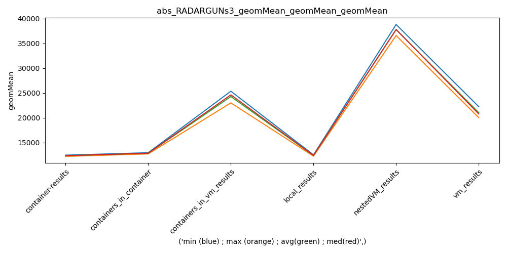
geomMean of all above (with all, thus wrong))
{'MIN': [1512751412.5343692, 2326951154.9856424, 3986489095.9673862, 1468812539.1923609, 39861900917.55764, 6060669566.629547], 'MAX': [1570892756.5512974, 2328481625.396394, 3689731427.4387097, 1518708955.4318795, 38848224636.06723, 5449398696.36905], 'AVG': [1564641036.2666416, 2326373089.690062, 3852630313.6257973, 1528179630.153488, 39809525917.20851, 5700770930.938842], 'MED': [1564875571.007884, 2334825599.791995, 3957374267.030642, 1536823456.743658, 39923225365.22509, 5638833400.326547]}
geomMean(with all thus wrong) geomMean geomMean geomMean
MIN 1512751412.5343692 container-results
MIN 2326951154.9856424 containers_in_container
MIN 3986489095.9673862 containers_in_vm_results
MIN 1468812539.1923609 local_results
MIN 39861900917.55764 nestedVM_results
MIN 6060669566.629547 vm_results
MAX 1570892756.5512974 container-results
MAX 2328481625.396394 containers_in_container
MAX 3689731427.4387097 containers_in_vm_results
MAX 1518708955.4318795 local_results
MAX 38848224636.06723 nestedVM_results
MAX 5449398696.36905 vm_results
AVG 1564641036.2666416 container-results
AVG 2326373089.690062 containers_in_container
AVG 3852630313.6257973 containers_in_vm_results
AVG 1528179630.153488 local_results
AVG 39809525917.20851 nestedVM_results
AVG 5700770930.938842 vm_results
MED 1564875571.007884 container-results
MED 2334825599.791995 containers_in_container
MED 3957374267.030642 containers_in_vm_results
MED 1536823456.743658 local_results
MED 39923225365.22509 nestedVM_results
MED 5638833400.326547 vm_results
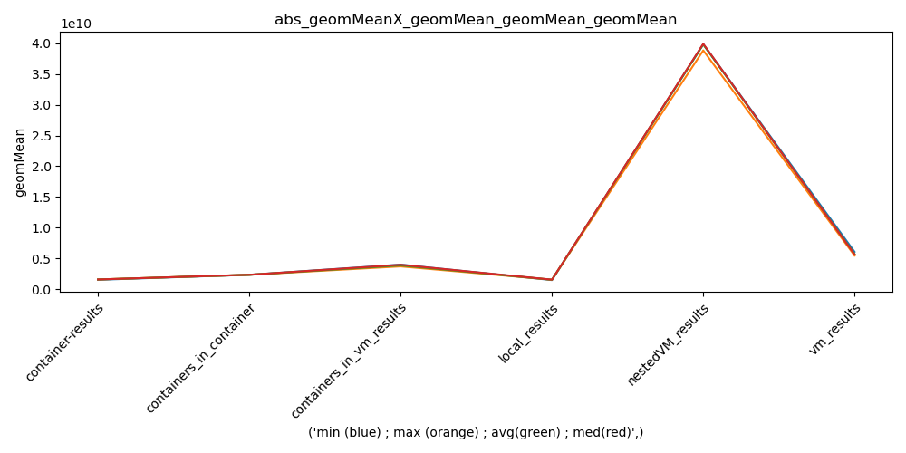
geomMean of all above
{'MIN': [1512751412.5343692, 2326951154.9856424, 3986489095.9673862, 1468812539.1923609, 39861900917.55764, 6060669566.629547], 'MAX': [1570892756.5512974, 2328481625.396394, 3689731427.4387097, 1518708955.4318795, 38848224636.06723, 5449398696.36905], 'AVG': [1564641036.2666416, 2326373089.690062, 3852630313.6257973, 1528179630.153488, 39809525917.20851, 5700770930.938842], 'MED': [1564875571.007884, 2334825599.791995, 3957374267.030642, 1536823456.743658, 39923225365.22509, 5638833400.326547]}
geomMean geomMean geomMean geomMean
MIN 1512751412.5343692 container-results
MIN 2326951154.9856424 containers_in_container
MIN 3986489095.9673862 containers_in_vm_results
MIN 1468812539.1923609 local_results
MIN 39861900917.55764 nestedVM_results
MIN 6060669566.629547 vm_results
MAX 1570892756.5512974 container-results
MAX 2328481625.396394 containers_in_container
MAX 3689731427.4387097 containers_in_vm_results
MAX 1518708955.4318795 local_results
MAX 38848224636.06723 nestedVM_results
MAX 5449398696.36905 vm_results
AVG 1564641036.2666416 container-results
AVG 2326373089.690062 containers_in_container
AVG 3852630313.6257973 containers_in_vm_results
AVG 1528179630.153488 local_results
AVG 39809525917.20851 nestedVM_results
AVG 5700770930.938842 vm_results
MED 1564875571.007884 container-results
MED 2334825599.791995 containers_in_container
MED 3957374267.030642 containers_in_vm_results
MED 1536823456.743658 local_results
MED 39923225365.22509 nestedVM_results
MED 5638833400.326547 vm_results
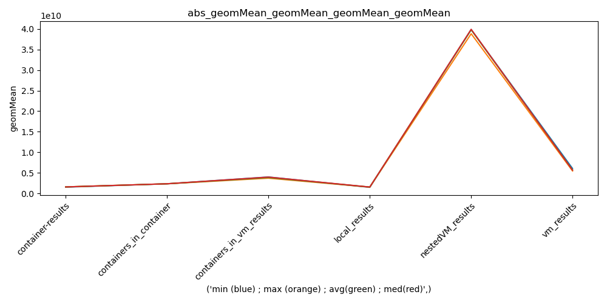
{kind=link}
{kind=link}
{kind=link}
{kind=link}
{kind=link}
{kind=link}
{kind=link}
{kind=link}
{kind=link}
{kind=link}
{kind=link}
{kind=link}
{kind=link}
{kind=link}
{kind=link}
{kind=link}
{kind=link}
{kind=link}
{kind=link}
{kind=link}
{kind=link}
{kind=link}
{kind=link}
{kind=link}
{kind=link}
{kind=link}
{kind=link}
{kind=link}
{kind=link}
{kind=link}
{kind=link}
{kind=link}
{kind=link}
{kind=link}
{kind=link}
{kind=link}
{kind=link}
{kind=link}
{kind=link}
{kind=link}
{kind=link}
{kind=link}
{kind=link}
{kind=link}
{kind=link}
{kind=link}
{kind=link}
{kind=link}
{kind=link}
{kind=link}
{kind=link}
{kind=link}
{kind=link}
{kind=link}
{kind=link}
{kind=link}
{kind=link}
{kind=link}
{kind=link}
{kind=link}
{kind=link}
{kind=link}
{kind=link}
{kind=link}
{kind=link}
{kind=link}
{kind=link}
{kind=link}
{kind=link}
{kind=link}
{kind=link}